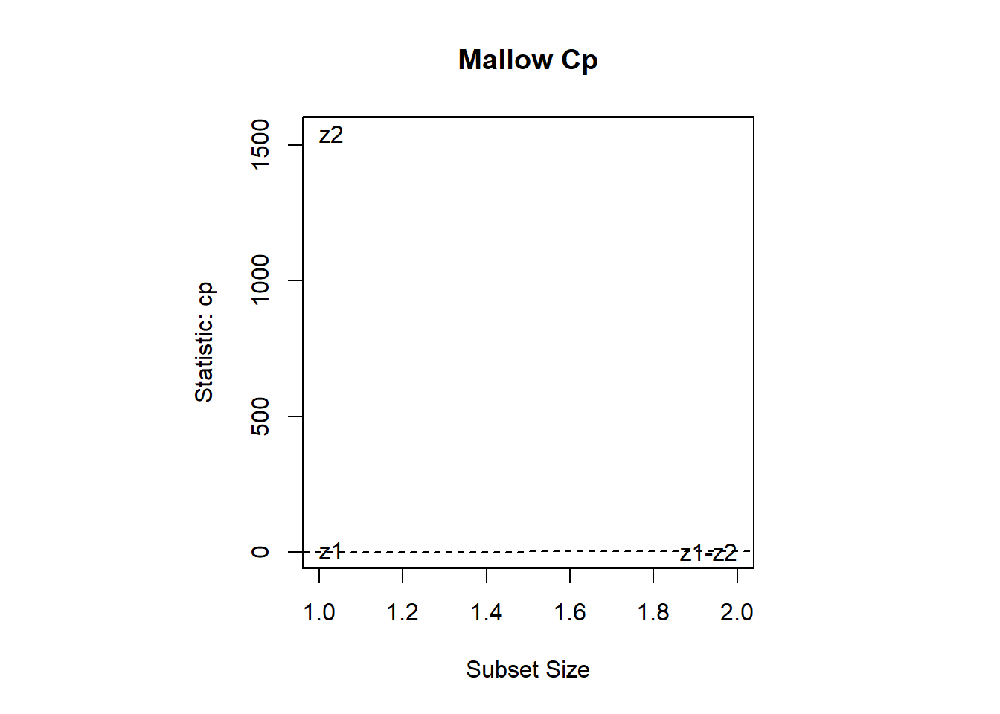

5.2 Modelo de Regresión Lineal Múltiple (RLM)
Sean \(Z_1,Z_2,\ldots,Z_r\) las \(r\)-variables predictoras (o regresoras) que se piensa están relacionadas con la variables respuesta \(Y\).
El modelo de regresión lineal clásico establece que la variables \(Y\) se compone de una media, la cual depende de manera continua de las variables \(Z´s\) y de un error aleatorio \(\varepsilon\), que da cuenta del error de medición y los efectos de otras variables no consideradas explícitamente en el modelo. Los valores de las variables predictoras registradas a partir de un experimento o establecidas por parte del investigador se tratan como valores fijos no aleatorios. El error (y por lo tanto la respuesta) se ven como una variable aleatoria cuyo comportamiento se caracteriza por un conjunto de suposiciones distribucionales.
Específicamente el Modelo de Regresión Lineal Múltiple toma la forma dada por: \[ \begin{equation} \underset{\text{Respuesta}}{Y} =\underset{\text{Media que depende de las}\ Z´s}{ \underbrace{ \beta_0 + \beta_1\ Z_1 + \beta_2\ Z_2 + \cdots + \beta_r}\ Z_r } + \underset{Error}{\varepsilon } \end{equation} \tag{5.1} \]
El término Lineal se refiere al hecho de que la media es una función lineal de los parámetros desconocidos \(\beta_0,\beta_1,\ldots,\beta_r\). Las variables predictoras pueden estar o no estar en el modelo como términos de primer orden.
Con \(n\)-observaciones independientes de la variables respuesta \(Y\) y los respectivos valores asociados de las variables predictoras \(Z_i´s\), el modelo de regresión lineal (5.1) se convierte en: \[ \begin{equation} y_1 = \beta_0 + \beta_1\ z_{11} + \beta_2\ z_{12} + \cdots + \beta_r\ z_{1r} + \varepsilon_1 \\ y_2 = \beta_0 + \beta_1\ z_{21} + \beta_2\ z_{22} + \cdots + \beta_r\ z_{2r} + \varepsilon_2 \\ \vdots \\ y_n = \beta_0 + \beta_1\ z_{n1} + \beta_2\ z_{n2} + \cdots + \beta_r\ z_{nr} + \varepsilon_n \\ \end{equation} \tag{5.2} \]
con las siguientes suposiciones sobre los términos de error \(\varepsilon_i\).
\[ \begin{equation} E[\varepsilon_i]=0 \\ Var[\varepsilon_i]= \sigma^2 \ \ (\text{ie. constante}) \\ Cov[\varepsilon_i \ ,\ \varepsilon_j]=0 \ \ , \ \ i\neq j \end{equation} \tag{5.3} \]
El modelo (5.2) en Forma Matricial se expresa como: \[ \begin{bmatrix} y_1 \\ y_2 \\ \vdots \\ y_n\end{bmatrix}=\begin{bmatrix} 1 & z_{11} & z_{12} & \cdots & z_{1r} \\ 1 & z_{21} & z_{22} & \cdots & z_{2r} \\ \vdots & \vdots & \vdots & \ddots & \vdots \\ 1 & z_{n1} & z_{n2} & \cdots & z_{nr} \end{bmatrix}\ \begin{bmatrix} \beta_0 \\ \beta_1 \\ \vdots \\ \beta_r \end{bmatrix} + \begin{bmatrix} \varepsilon_1 \\ \varepsilon_2 \\ \vdots \\ \varepsilon_n \end{bmatrix} \]
o equivalentemente, \[ \begin{equation} \underset{n\times 1}{\underline{\mathbf{y}}}= \underset{n \times (r+1)}{ \underset{}{\mathbf{Z}} } \ \ \underset{(n+r)\times 1}{\underline{\boldsymbol \beta}} + \ \underset{n\times 1}{\underline{\boldsymbol \varepsilon}} \end{equation} \tag{5.4} \]
y los supuestos de (5.3) se convierten en: \[ \begin{equation} E[\ \underline{\boldsymbol \varepsilon}\ ]= \underline{\mathbf{0}} \\ Var[\ \underline{\boldsymbol \varepsilon} \ ] = \sigma^2\ \mathbf{I}_n \end{equation} \tag{5.5} \]
A la matriz \(\mathbf{Z}\)-se le llama Matriz Diseño, al vector \(\underline{\boldsymbol \beta}\)-vector de parámetros del modelo y al vector \(\underline{\boldsymbol \varepsilon}\)-vector de errores del modelo. Cada columna de \(\mathbf{Z}\) contiene los \(n\)-valores de las variables regresoras \(Z´s\), mientras que cada fila de \(\mathbf{Z}\) contiene los valores de las \(r\)-variables regresoras sobre el individuo \(i\)-ésimo \(i=1,2,\ldots,n\).
5.2.1 Estimación de Mínimos Cuadrados
Uno de los objetivos del análisis de regresión es desarrollar una ecuación que permita predecir la respuesta para valores dados de las variables predictoras. Por lo tanto, es necesario “ajustar” el modelo dado en (5.4) a los valores observados \(y_j\) correspondientes a los valores conocidos \(1,z_{i1},z_{i2},\ldots,z_{ir}\). Es decir, se deben determinar los valores para los Coeficientes de Regresión \(\underline{\boldsymbol \beta}\) y la varianza de error \(\sigma^2\) consistente con los datos disponibles.
El método de Mínimos Cuadrados consiste en hallar el vector \(\underline{\boldsymbol \beta}\) que minimice la suma de cuadrados de errores dada por: \[ \begin{equation} S(\underline{\boldsymbol \beta})= \sum_{i=1}^n\ (y_i-\beta_0 - \beta_1\ z_{i1} - \beta_2\ z_{i2} - \cdots - \beta_r\ z_{ir})^2 \\ = (\underline{\mathbf{y}}-\mathbf{Z}\ \underline{\boldsymbol \beta})^{\ t }(\underline{\mathbf{y}}-\mathbf{Z}\ \underline{\boldsymbol \beta}) \end{equation} \tag{5.6} \]
La solución \(\widehat{\underline{\boldsymbol \beta}}\) a la ecuación anterior se dice que es consistente con los datos en el sentido de que ella produce la respuesta media estimada (o ajustada) \(\widehat{y_i}=\hat{\beta}_0+\hat{\beta}_1 \ z_{i1}+ \hat{\beta}_2\ z_{i2}+ \cdots + \hat{\beta}_r\ z_{ir}\) cuya suma de cuadrados de las diferencias desde el valor observado \(y_i\) al valor estimado \(\hat{y}_i\) sea tan pequeña como sea posible. A las deviaciones dadas por \[ \hat{\varepsilon}_i = y_i - \hat{y}_i = y_i - (\hat{\beta}_0+\hat{\beta}_1 \ z_{i1}+ \hat{\beta}_2\ z_{i2}+ \cdots + \hat{\beta}_r\ z_{ir}) \ \ \ , \ \ \ i=1,2,\ldots,n \]
se les llaman Residuales. El vector de residuales \[ \widehat{\underline{\boldsymbol \varepsilon}}= \underline{\mathbf{y}} - \widehat{\underline{\mathbf{y}}}=\underline{\mathbf{y}} - \mathbf{Z} \ \widehat{\underline{\boldsymbol \beta}} \]
contiene información acerca del parámetro restante desconocido \(\sigma^2\), como se verá más adelante.
Teorema 5.1 (Teorema Estimadores de Mínimos Cuadrados en el MRLM) Sea \(\mathbf{Z}\) de rango completo \((r+1) \leq n\). El Estimador de Mínimos Cuadrados de \(\underline{\boldsymbol \beta}\) obtenido de (5.6) está dado por:
\[ \begin{equation} \widehat{\underline{\boldsymbol \beta}}= (\mathbf{Z}^{\ t}\ \mathbf{Z})^{-1} \mathbf{Z}^{\ t}\ \underline{\mathbf{y}} \end{equation} \tag{5.7} \]
Además, si \[ \widehat{\underline{\mathbf{y}}}= \mathbf{Z} \ \widehat{\underline{\boldsymbol \beta}}= \mathbf{Z}\biggl((\mathbf{Z}^{\ t}\ \mathbf{Z})^{-1} \mathbf{Z}^{\ t}\ \underline{\mathbf{y}}\biggl)= \mathbf{H}\ \underline{\mathbf{y}} \ \ \ \ , \ \ \text{con:} \ \ \ \underset{n\times n}{\mathbf{H} }=\mathbf{Z}\ (\mathbf{Z}^{\ t}\ \mathbf{Z})^{-1} \mathbf{Z}^{\ t}-\text{Matriz Sombrero} \]
El vector de residuales \[ \widehat{\underline{\boldsymbol \varepsilon}}= \underline{\mathbf{y}} - \widehat{\underline{\mathbf{y}}}=\underline{\mathbf{y}} - \mathbf{H}\ \underline{\mathbf{y}} = (\mathbf{I}-\mathbf{H})\ \underline{\mathbf{y}} \]
cumple que: \[ \mathbf{Z}^{\ t}\ \widehat{\underline{\boldsymbol \varepsilon}}= \underline{\mathbf{0}} \ \ \ \ \ y \ \ \ \ \ \ \ \underline{\mathbf{y}}^{\ t}\ \widehat{\underline{\boldsymbol \varepsilon}}= 0 \]
Además, la suma cuadrática de residuales \[ \widehat{\underline{\boldsymbol \varepsilon}}^{\ t}\widehat{\underline{\boldsymbol \varepsilon}}= \sum_{i=1}^n\ (y_i - \hat{y}_i = y_i - \hat{\beta}_0 - \hat{\beta}_1 \ z_{i1} - \hat{\beta}_2\ z_{i2} - \cdots - \hat{\beta}_r\ z_{ir})^2 \\ = \underline{\mathbf{y}}^{\ t} \bigl[\ \mathbf{I} - \mathbf{Z}(\mathbf{Z}^{\ t}\ \mathbf{Z})^{-1} \mathbf{Z}^{\ t}\ \bigr]\ \underline{\mathbf{y}} \\ \widehat{\underline{\boldsymbol \varepsilon}}^{\ t}\widehat{\underline{\boldsymbol \varepsilon}}= \underline{\mathbf{y}}^{\ t}\ \underline{\mathbf{y}} - \underline{\mathbf{y}}^{\ t}\ \mathbf{Z}\ \widehat{ \underline{\boldsymbol \beta} } \]
Por otro lado, también se tiene que: \[ \widehat{\underline{\boldsymbol \varepsilon}}^{\ t}\widehat{\underline{\boldsymbol \varepsilon}}= \biggl( (\mathbf{I}-\mathbf{H})\ \underline{\mathbf{y}} \biggr)^{t} \biggl( (\mathbf{I}-\mathbf{H})\ \underline{\mathbf{y}} \biggr) \\ = \underline{\mathbf{y}}^t\ (\mathbf{I}-\mathbf{H})^t (\mathbf{I}-\mathbf{H})\ \underline{\mathbf{y}} \\ = \underline{\mathbf{y}}^t\ (\mathbf{I}-\mathbf{H})^2\ \underline{\mathbf{y}} \\ \widehat{\underline{\boldsymbol \varepsilon}}^{\ t}\widehat{\underline{\boldsymbol \varepsilon}} = \underline{\mathbf{y}}^{\ t}\ \bigl[\mathbf{I}-\mathbf{H}\bigr] \ \underline{\mathbf{y}} \]
Ejemplo 5.1 (Estimador de Mínimos Cuadrados de un MRLM) Calcular el Estimador de Mínimos Cuadrados \(\widehat{\underline{\boldsymbol \beta}}\), el vecor de residuales \(\widehat{\underline{\boldsymbol \varepsilon}}\) y la suma de cuadrados de residuales \(\widehat{\underline{\boldsymbol \varepsilon}}^t\widehat{\underline{\boldsymbol \varepsilon}}\) para el MRLM:
\[ Y_j= \beta_0 + \beta_1\ z_{j1}+\varepsilon_j \]
ajustado a los datos: \[ \begin{array}{c|ccccc} z_1 & 0 & 1 & 2 & 3 & 4 \\\hline Y & 1 & 4 & 4 & 8 & 9 \end{array} \]
En este caso se tienen las siguientes matrices involucradas en el MRLM: \[ \mathbf{Z}= \begin{bmatrix} 1 &0\\ 1 &1 \\ 1&2 \\ 1&3 \\ 1&4 \end{bmatrix} \ \ \ , \ \ \ \ \mathbf{Z}^t= \begin{bmatrix} 1 & 1 & 1 & 1 & 1 \\ 0 & 1 & 2 & 3 & 4 \end{bmatrix} \ \ \ , \ \ \ \ \underline{\mathbf{y}}= \begin{bmatrix} 1 \\ 4 \\ 3 \\ 8 \\ 9 \end{bmatrix} \]
\[ \mathbf{Z}^t\mathbf{Z}= \begin{bmatrix} 5 & 10 \\ 10 & 30 \end{bmatrix} \ \ \ , \ \ \ \ (\mathbf{Z}^t\mathbf{Z})^{-1}= \begin{bmatrix} 0.6 & -0.2 \\ -0. & 0.1 \end{bmatrix} \ \ \ , \ \ \ \ \mathbf{Z}^t\underline{\mathbf{y}}= \begin{bmatrix} 25 \\ 70 \end{bmatrix} \]
Luego, el Estimador de Mínimos Cuadrados esta dado por: \[ \widehat{\underline{\boldsymbol \beta}}=\mathbf{Z}^t\underline{\mathbf{y}}= \begin{bmatrix} \hat{\beta}_0 \\ \hat{\beta}_1 \end{bmatrix}=(\mathbf{Z}^t\mathbf{Z})^{-1}\mathbf{Z}^t\underline{\mathbf{y}}=\begin{bmatrix} 0.6 & -0.2 \\ -0. & 0.1 \end{bmatrix}\begin{bmatrix} 25 \\ 70 \end{bmatrix}=\begin{bmatrix} 1 \\ 2 \end{bmatrix} \]
de donde el MRLM-Ajustado es: \[ \hat{y}=\hat{\beta}_0 + \hat{\beta}_1\ z \]
es decir: \[ \hat{y}=1 + 2\ z \]
Ahora, el vector de valores predichos es: \[ \underline{\hat{\mathbf{y}}}= \mathbf{Z}\ \widehat{\underline{\boldsymbol \beta}}=\begin{bmatrix} 1 &0\\ 1 &1 \\ 1&2 \\ 1&3 \\ 1&4 \end{bmatrix}\begin{bmatrix} 1 \\ 2 \end{bmatrix}=\begin{bmatrix} 1 \\ 3 \\ 5 \\ 7 \\ 9 \end{bmatrix} \]
de donde, el vector de residuales es: \[ \widehat{\underline{\boldsymbol \varepsilon}}=\underline{\mathbf{y}} - \underline{\hat{\mathbf{y}}}= \begin{bmatrix} 1 \\ 4 \\ 3 \\ 8 \\ 9 \end{bmatrix}-\begin{bmatrix} 1 \\ 3 \\ 5 \\ 7 \\ 9 \end{bmatrix}=\begin{bmatrix} 0 \\ 1 \\ -2 \\ 1 \\ 0 \end{bmatrix} \]
y la suma cuadrática de residuales es: \[ \widehat{\underline{\boldsymbol \varepsilon}}^t\widehat{\underline{\boldsymbol \varepsilon}}=\begin{bmatrix} 0 & 1 & -2 & 1 & 0 \end{bmatrix}\begin{bmatrix} 0 \\ 1 \\ -2 \\ 1 \\ 0 \end{bmatrix}= 6 \]
## Sum_of_Squares DF Mean_Square F_Value P_value
## Model 40 1 40 20 0.0208352
## Error 6 3 2##
## Call:
## lm(formula = y ~ z)
##
## Residuals:
## 1 2 3 4 5
## 0 1 -2 1 0
##
## Coefficients:
## Estimate Std. Error t value Pr(>|t|)
## (Intercept) 1.000 1.095 0.91 0.429
## z 2.000 0.447 4.47 0.021 *
## ---
## Signif. codes:
## 0 '***' 0.001 '**' 0.01 '*' 0.05 '.' 0.1 ' ' 1
##
## Residual standard error: 1.41 on 3 degrees of freedom
## Multiple R-squared: 0.87, Adjusted R-squared: 0.826
## F-statistic: 20 on 1 and 3 DF, p-value: 0.02085.2.1.1 Descomposición de la Suma Total de Cuadrados
A partir de la suma de cuadrados total dada por \(\underline{\mathbf{y}}^t \underline{\mathbf{y}}=\sum_{i=1}^n\ y_i^2\) y usando el hecho de que \(\underline{\mathbf{y}}^{\ t}\ \widehat{\underline{\boldsymbol \varepsilon}}= 0\) se tiene que: \[ \underline{\mathbf{y}}^t \underline{\mathbf{y}} = ( \hat{\underline{\mathbf{y}}} + \underline{\mathbf{y}} - \hat{\underline{\mathbf{y}}} )^{\ t}\ ( \hat{\underline{\mathbf{y}}} + \underline{\mathbf{y}} - \hat{\underline{\mathbf{y}}} ) \\ = ( \hat{\underline{\mathbf{y}}} + \hat{\underline{\boldsymbol \varepsilon }} )^{\ t}\ ( \hat{\underline{\mathbf{y}}} + \hat{\underline{\boldsymbol \varepsilon }} ) \\ \underline{\mathbf{y}}^t \underline{\mathbf{y}} = \hat{\underline{\mathbf{y}}}^{\ t} \ \hat{\underline{\mathbf{y}}} + \hat{\underline{\boldsymbol \varepsilon }}^{\ t}\ \hat{\underline{\boldsymbol \varepsilon }} \] \[ \begin{equation} \underline{\mathbf{y}}^t \underline{\mathbf{y}} = \hat{\underline{\mathbf{y}}}^{\ t} \ \hat{\underline{\mathbf{y}}} + \hat{\underline{\boldsymbol \varepsilon }}^{\ t}\ \hat{\underline{\boldsymbol \varepsilon }} \end{equation} \tag{5.8} \]
Ahora de la condición de que \(\mathbf{Z}^{\ t}\ \widehat{\underline{\boldsymbol \varepsilon}}=\underline{\mathbf{0}}\), se tiene que: \[ 0 = \underline{\mathbf{1}}^{\ t}\ \widehat{\underline{\boldsymbol \varepsilon}} = \sum_{i=1}^n \ \hat{\varepsilon}_i = \sum_{i=1}^n (y_i- \hat{y}_i) = \sum_{i=1}^n y_i - \sum_{i=1}^n\ \hat{y}_i \ \ ,\ \ \text{es decir:} \ \ \overline{y}= \overline{\hat{y}} \]
de donde, restando a ambos lados de (5.8) la cantidad \(n\ \overline{y} =n\ \overline{\hat{y}}\), se tiene que: \[ ( \underline{\mathbf{y}}^t \underline{\mathbf{y}} - n\ \overline{y} )= (\hat{\underline{\mathbf{y}}}^{\ t} \ \hat{\underline{\mathbf{y}}} - n\ \overline{\hat{y}} ) + \hat{\underline{\boldsymbol \varepsilon }}^{\ t}\ \hat{\underline{\boldsymbol \varepsilon }} \]
o equivalentemente \[ \begin{equation} \sum_{i=1}^n\ ( y_i - \overline{y} )^2 = \sum_{i=1}^n\ ( \hat{y}_i - \overline{y} ) + \sum_{i=1}^n \ \varepsilon_i^2 \end{equation} \tag{5.9} \]
obteniendo: \[ SST = SSR + SSE \]
La descomposición anterior de la Suma de Cuadrados Total, sugiere que la calidad de los Modelos Ajustados puede ser medida porel Coeficiente de Determinación Múltiple dado por: \[ \begin{equation} R^2 = 1- \frac{\sum_{i=1}^n \ \varepsilon_i^2}{\sum_{i=1}^n\ ( y_i - \overline{y} )^2} = 1 - \frac{SSE}{SST} \end{equation} \tag{5.10} \]
o equivalentemente, \[ \begin{equation} R^2= \frac{ \sum_{i=1}^n\ ( \hat{y}_i - \overline{y} ) }{\sum_{i=1}^n\ ( y_i - \overline{y} )^2} = \frac{SSR}{SST} \end{equation} \tag{5.10} \]
La cantidad \(R^2\)-nos da la proporción de variación total de las respuestas \(y_i´s\), explicada por (o atribuibles a) las variables predictoras \(Z_1,Z_2,\ldots,Z_r\). Aquí, \(R^2\) (o el Coeficiente de Correlación Múltiple \(R=\sqrt{R^2}\)) es igual a 1, si la ecuación ajustada pasa a través de todos los puntos o datos observados, de modo que \(\hat{\varepsilon}_i=0 \ \ \ \forall i\). En el otro extremo \(R^2=0\) si \(\hat{\beta}_0 = \overline{y}\) y \(\hat{\beta}_1=\hat{\beta}_2=\cdots=\hat{\beta}_r=0\). En este caso las variables predictoras \(Z_1,Z_2,\ldots,Z_r\) no tienen influencia sobre la variable respuesta \(Y\).
5.2.1.2 Geometría de los Mínimos Cuadrados
Una interpretación geométrica de la técnica de mínimos cuadrados ilustra la naturaleza del concepto. De acuerdo al Modelo de Regresión Lineal Clásico, \[ E[\underline{\mathbf{y}}]=\mathbf{Z} \ \underline{\boldsymbol \beta} = \beta_0 \begin{bmatrix} 1 \\ 1 \\ \vdots \\ 1 \end{bmatrix} + \beta_1 \begin{bmatrix} z_{11} \\ z_{21} \\ \vdots \\ z_{n1} \end{bmatrix} + \beta_2 \begin{bmatrix} z_{12} \\ z_{22} \\ \vdots \\ z_{n2} \end{bmatrix} + \cdots + \beta_r \begin{bmatrix} z_{1r} \\ z_{2r} \\ \vdots \\ z_{nr} \end{bmatrix} \]
es decir que, el vector de respuesta media \(E[\ \underline{\mathbf{y}}\ ]\) es una combinación lineal de las columnas de \(\mathbf{Z}\). A medida que \(\underline{\boldsymbol \beta}\) varía, \(\mathbf{Z}\ \underline{\boldsymbol \beta}\) genera el plano-modelo de todas las combinaciones lineales. Usualmente, el vector de observaciones \(\underline{\mathbf{y}}\) no caé en el plano-modelo, debido al error aleatorio \(\underline{\boldsymbol \varepsilon}\), es decir que, \(\underline{\mathbf{y}}\)-no es (exactamente) una combinación lineal de las columnas de \(\mathbf{Z}\).
Recordemos que: \[ \underset{Vector-Respuesta}{\underline{\mathbf{y}} } = \underset{Vector-en-Plano-Modelos}{ \mathbf{Z} \ \underline{\boldsymbol \beta} } + \underset{Vector-de-Error}{ \underline{\boldsymbol \varepsilon} } \] Una vez que las observaciones están disponibles, se deriva la solución de mínimos cuadrados del vector de desviación: \[ \underline{\mathbf{y}}-\mathbf{Z}\ \underline{\boldsymbol b} = (\text{Vector de Observación}) -(\text{Vector en el Plano-Modelo}) \]
la longitud al cuadrado \((\underline{\mathbf{y}}-\mathbf{Z}\ \underline{\boldsymbol b})^{\ t}\ (\underline{\mathbf{y}}-\mathbf{Z}\ \underline{\boldsymbol b})\) es la suma de cuadrados \(S(\ \underline{\boldsymbol b}\ )\). Como se ilustra en la figura, \(S(\ \underline{\boldsymbol b}\ )\) es lo más pequeño posible, cuando se selecciona \(\underline{\boldsymbol b}\) tal que \(\mathbf{Z}\ \underline{\boldsymbol b}\) es el punto en el Plano-Modelo lo mas cercano a \(\underline{\mathbf{y}}\). Este punto ocurre en la punta de la proyección perpendicular de \(\underline{\mathbf{y}}\) sobre el plano. Es decir, para la elección de \(\underline{\boldsymbol b}=\widehat{\underline{\boldsymbol \beta}}\), \(\widehat{\underline{\mathbf{y}}}=\mathbf{Z}\ \widehat{\underline{\boldsymbol \beta}}\) es la proyección de \(\underline{\mathbf{y}}\) sobre el plano que consiste de todas las combinaciones lineales de las columnas de \(\mathbf{Z}\). El vector de residuales \(\widehat{ \underline{\boldsymbol \varepsilon}}=\underline{\mathbf{y}} - \widehat{\underline{\mathbf{y}}}\) es perpendicular a ese plano.
5.2.1.3 Propiedades Muestrales de los Estimadores Mínimo Cuadráticos
El vector de estimadores de mínimos cuadrados \(\widehat{\underline{\boldsymbol \beta}}\) y el vector de residuales \(\widehat{ \underline{\boldsymbol \varepsilon}}\) tienen las propiedades muestrales que se enuncian en le siguiente resultado.
Teorema 5.2 (Propiedades del Estimador de Mínimos Cuadrados) Bajo el Modelo de Regresión Lineal General dado en (5.4) y (5.5), el estimador de Mínimos Cuadrados \(\widehat{\underline{\boldsymbol \beta}}=(\ \mathbf{Z}^{\ t}\ \mathbf{Z}\ )^{-1}\ \mathbf{Z}^t\ \underline{\mathbf{y}}\) cumple que:
\[ \begin{equation} E[\ \widehat{\underline{\boldsymbol \beta}}\ ] = \underline{\boldsymbol \beta} \ \ \ \ \ \ , \ \ \ \ \ Var[\ \widehat{\underline{\boldsymbol \beta}}\ ]=\sigma^2\ (\ \mathbf{Z}^{\ t}\ \mathbf{Z}\ )^{-1} \end{equation} \tag{5.11} \]
además, el vector de residuales \(\widehat{\underline{\boldsymbol \varepsilon}}\) cumple que: \[ \begin{equation} E[\ \widehat{\underline{\boldsymbol \varepsilon}}\ ] = \underline{\boldsymbol 0} \ \ \ \ \ \ , \ \ \ \ \ Var[\ \widehat{\underline{\boldsymbol \varepsilon}}\ ]=\sigma^2\ [\ \mathbf{I}- \mathbf{H}\ ] \end{equation} \tag{5.12} \]
también se cumple que: \(E[\ \widehat{\underline{\boldsymbol \varepsilon}}^{\ t}\ \widehat{\underline{\boldsymbol \varepsilon}}\ ]=(n-(r+1))\sigma^2\).
Definiendo a \[ S^2= \frac{\widehat{\underline{\boldsymbol \varepsilon}}^{\ t}\ \widehat{\underline{\boldsymbol \varepsilon}}}{n-(r+1)}= \frac{\underline{\mathbf{y}}\ ^{\ t}[\ \mathbf{I}- \mathbf{H}\ ]\ \underline{\mathbf{y}}}{n-r-1} \]
se tiene que: \[ E[\ S^2\ ]= \sigma^2. \]
Además, \(\widehat{\underline{\boldsymbol \beta}}\) y \(\widehat{\underline{\boldsymbol \varepsilon}}\)-son No-Correlacionados o independientes.
Teorema 5.3 (Propiedades de MC-Teorema de Gauss) Sea el Modelo de Regresión Lineal General dado en (5.4) y (5.5) y \(\mathbf{Z}\) de rango completo \(r+1\). Para cualquier vector de constantes \(\underline{\mathbf{c}}\), el estimador
\[ \underline{\mathbf{c}}^{\ t}\ \widehat{\underline{\boldsymbol \beta}}= c_0\ \hat{\beta}_0 + c_1\ \hat{\beta}_1 + \cdots + c_r\ \hat{\beta}_r \]
de \(\underline{\mathbf{c}}^{\ t}\ \underline{\boldsymbol \beta}\)-tiene la varianza más pequeña posible entre todos los estimadores lineales insesgados de \(\underline{\mathbf{c}}^{\ t}\ \underline{\boldsymbol \beta}\) de la forma \[ \underline{\mathbf{a}}^{\ t}\ \underline{\mathbf{y}}= a_1\ y_1 + a_2\ y_2 + \cdots + a_n\ y_n. \]
5.2.2 Inferencias Acerca del Modelo de Regresión Lineal Múltiple
Ahora se describen procedimientos de inferencia basados en el modelo clásico de regresión lineal dado en (5.4) y (5.5) con el supuesto adicional (tentativo) de que los errores \(\underline{\boldsymbol \varepsilon}\) tienen una distribución normal. También se consideran métodos para comprobar la adecuación de dicho modelo
5.2.2.1 Inferencias Concernientes a los Parámetros de Regresión
Sea el Modelo de Regresión Linela Multiple dado por \[ \underline{\mathbf{y}}= \mathbf{Z}\ \underline{\boldsymbol \beta} + \underline{\boldsymbol \varepsilon} \]
con los supuestos dados por: \[ \begin{equation} \underline{\boldsymbol \varepsilon} \sim N_n \bigl(\ \underline{\mathbf{0}}\ , \ \sigma^2\mathbf{I}_n \bigr), \ \ ie. \ \ \varepsilon_i \underset{i.i.d}{\sim} N(\ 0\ ,\ \sigma^2\ ) \end{equation} \tag{5.13} \]
Antes de evaluar la importancia de algunas variables regresoras particulares en la función de regresión dada por \[ E[Y]=\beta_0 + \beta_1\ Z_1 + \beta_2\ Z_2 + \cdots + \beta_r\ Z_r \]
se debe determinar la distribución muestral de \(\widehat{\underline{\boldsymbol \beta}}\) y de la suma de cuadrados de residuales \(\widehat{\underline{\boldsymbol \varepsilon}}^{\ t}\ \widehat{\underline{\boldsymbol \varepsilon}}\). Se utilizarán los supuestos dados en (5.13).
Teorema 5.4 (Distribución Muestral del Beta-Gorro) Para el modelo dado por \(\underline{\mathbf{y}}= \mathbf{Z}\ \underline{\boldsymbol \beta} + \underline{\boldsymbol \varepsilon}\) con \(\mathbf{Z}\)-de rango completo \(r+1\) y \(\underline{\boldsymbol \varepsilon}\) con los supuestos dados en (5.13), ie. \(\underline{\boldsymbol \varepsilon} \sim N_n \bigl(\ \underline{\mathbf{0}}\ , \ \sigma^2\mathbf{I}_n \bigr)\).
El Estimador de Máxima Verosimilitud de \(\underline{\boldsymbol \beta}\) es el mismo estimador \(\widehat{\underline{\boldsymbol \beta}}\) de mínimos cuadrados. Además, \[ \widehat{\underline{\boldsymbol \beta}} = (\mathbf{Z}^t\mathbf{Z})^{-1}\mathbf{Z}^t\underline{\mathbf{y}} \sim N_{r+1} \biggl(\ \underline{\boldsymbol \beta}\ , \ \sigma^2\ (\mathbf{Z}^t\mathbf{Z})^{-1} \biggr) \]
y es distribuído independientemente de los residuales \(\widehat{\underline{\boldsymbol \varepsilon}}=\underline{\mathbf{y}}-\mathbf{Z}\ \widehat{\underline{\boldsymbol \beta}}\), es decir, \(Cov[\ \widehat{\underline{\boldsymbol \beta}} \ , \ \widehat{\underline{\boldsymbol \varepsilon}} \ ]=\underline{\mathbf{0}}\).
Además, \[ n\ \widehat{\sigma}^2 = \widehat{\underline{\boldsymbol \varepsilon}}^{\ t}\ \widehat{\underline{\boldsymbol \varepsilon}} \sim \sigma^2\ \chi_{n-(r+1)}^2 \]
donde \(\widehat{\sigma}^2\)-es el MLE de \(\sigma^2\).
Teorema 5.5 (Región de Confianza para Beta) Sea el modelo dado por \(\underline{\mathbf{y}}= \mathbf{Z}\ \underline{\boldsymbol \beta} + \underline{\boldsymbol \varepsilon}\) con \(\mathbf{Z}\)-de rango completo \(r+1\) y \(\underline{\boldsymbol \varepsilon}\) con los supuestos dados en (5.13), ie. \(\underline{\boldsymbol \varepsilon} \sim N_n \bigl(\ \underline{\mathbf{0}}\ , \ \sigma^2\mathbf{I}_n \bigr)\) entonces, una Región de Confianza del \((1-\alpha)100\%\) para \(\underline{\boldsymbol \beta}\) está dada por:
\[ \begin{equation} (\ \underline{\boldsymbol \beta} - \widehat{\underline{\boldsymbol \beta}} \ ) \ \mathbf{Z}^t \ \mathbf{Z}\ (\ \underline{\boldsymbol \beta} - \widehat{\underline{\boldsymbol \beta}} \ ) \leq (r+1)\ S^2 F_{1-\alpha \ ; \ r+1 \ , \ n-(r+1)} \end{equation} \tag{5.14} \]
donde \(F_{1-\alpha \ ; \ r+1 \ , \ n-(r+1)}\)-es el percentil \((1-\alpha)100\%\) superior de la distribución \(F\)-con \(r+1\) y \(n-r-1\)-grados de libertad.
También IC-Simultáneos del \((1-\alpha)100\%\) para los \(\beta_i\) están dados por: \[ \begin{equation} \hat{\beta}_i \ \pm \ \sqrt{\widehat{Var}( \ \hat{\beta_i} \ )}\ \sqrt{(r+1)\ F_{1-\alpha\ ; \ r+1\ , \ n-(r+1)}} \ \ , \ \ \ i=0,1,2,\ldots,r \end{equation} \tag{5.15} \]
donde \(\widehat{Var}( \ \hat{\beta_i} \ )\)-es el \(i\)-ésimo elemento de la diagonal de la matriz \(S^2 (\mathbf{Z}^{\ t}\ \mathbf{Z})^{-1}\) que corresponde a \(\hat{\beta}_i\).
Nota: La elipse de confianza está centrado en la estimación de máxima verosimilitud \(\widehat{\underline{\boldsymbol \beta}}\), y su orientación y forma están determinadas por los valores y vectores propios de \(\mathbf{Z}^t\mathbf{Z}\). Si un valor propio es cercano a cero, la elipse de confianza será muy largo en la dirección del vector propio correspondiente.
Frecuentemente los practicantes ignoran la propiedad de confianza “simultánea” de los intervalos estimados en (5.15). En su lugar, reemplazan a \((r+1)\ F_{1-\alpha\ ; \ r+1\ , \ n-(r+1)}\) con el \(t\)-valor de intervalos uno a la vez, \(t_{1-\alpha/2\ ;\ n-(r+1)}\) y usan los intervalos dados por: \[ \begin{equation} \hat{\beta}_i \ \pm \ t_{1-\alpha/2\ ;\ n-(r+1)}\ \sqrt{\widehat{Var}( \ \hat{\beta_i} \ )} \ \ , \ \ \ i=0,1,2,\ldots,r \end{equation} \tag{5.16} \]
cuando se buscan variables predictoras importantes.
Ejemplo 5.2 (Modelo de Regresión Lineal Múltiple) Los siguientes datos se obtuvieron de la evaluación de 20 hogares en un vecindario de Milwaukee, Wisconsin.
| Z1 | Z2 | Y |
|---|---|---|
| 15.31 | 57.3 | 74.8 |
| 15.20 | 63.8 | 74.0 |
| 16.25 | 65.4 | 72.9 |
| 14.33 | 57.0 | 70.0 |
| 14.57 | 63.8 | 74.9 |
| 17.33 | 63.2 | 76.0 |
| 14.48 | 60.2 | 72.0 |
| 14.91 | 57.7 | 73.5 |
| 15.25 | 56.4 | 74.5 |
| 13.89 | 55.6 | 73.5 |
| 15.18 | 62.6 | 71.5 |
| 14.44 | 63.4 | 71.0 |
| 14.87 | 60.2 | 78.9 |
| 18.63 | 67.2 | 86.5 |
| 15.20 | 57.1 | 68.0 |
| 25.76 | 89.6 | 102.0 |
| 19.05 | 68.6 | 84.0 |
| 15.37 | 60.1 | 69.0 |
| 18.06 | 66.3 | 88.0 |
| 16.35 | 65.8 | 76.0 |
donde:
\(Z_1\): Tamaño total de la Vivienda (en cientos de metros cuadrados)
\(Z_2\): Valor pedido por la Vivienda (en miles de dólares)
\(Y\): Precio de venta de la Vivienda (en miles de dólares)
Ajustar el MRLM
\[ y_i=\beta_0 + \beta_1 \ Z_{i1} + \beta_2\ Z_{i2} + \varepsilon_i \]
usando mínimos cuadrados.
De los datos se tiene que: \[ (\mathbf{Z}^t\mathbf{Z})^{-1}= \begin{bmatrix} 5.1523 & 0.2544 & -0.1463 \\ & 0.0512 & -0.0172 \\ && 0.0067 \end{bmatrix} \]
y \[ \widehat{\underline{\boldsymbol \beta}} = (\mathbf{Z}^t\mathbf{Z})^{-1}\mathbf{Z}^t\ \underline{\mathbf{y}}=\begin{bmatrix} \hat{\beta}_0 \\ \hat{\beta}_1 \\\hat{\beta}_2 \end{bmatrix}=\begin{bmatrix} 30.967 \\ 2.634 \\ 0.045 \end{bmatrix} \]
de donde la ecuación de regresión ajustada es: \[ \hat{y} = \hat{\beta}_0 + \hat{\beta}_0 \ Z_z + \hat{\beta}_2 \ Z_2 \]
\[ \hat{y}= 30.967 + 2.634 \ Z_1 + 0.045 \ Z_2 \]
De los resultados se tiene que \[ s^2= \frac{\widehat{\underline{\boldsymbol \varepsilon}}^{\ t}\widehat{\underline{\boldsymbol \varepsilon}}}{n-(r+1)} = \frac{\underline{\mathbf{y}^t\ [\ \mathbf{I}_n-\mathbf{H}\ ]\ \underline{\mathbf{y}}}}{n-r-1} = 12.059 \] es decir \(s=\) 3.473, y la matriz de varianzas-covarianzas de \(\widehat{\underline{\boldsymbol \beta}}\) es: \[ Var[\ \widehat{\underline{\boldsymbol \beta}}\ ] = s^2\ (\mathbf{Z}^t\mathbf{Z})^{-1}=\begin{bmatrix} 62.131 & 3.068 & -1.764 \\ & 0.617 & -0.207 \\ && 0.081 \end{bmatrix} \]
de donde las desviaciones estándar de los \(\hat{\beta}_i\) son: \[ s_{\hat{\beta}_0}= \sqrt{Var[\hat{\beta}_0]} = 7.882 \\ s_{\hat{\beta}_1}= \sqrt{Var[\hat{\beta}_1]} = 0.785 \\ s_{\hat{\beta}_2}= \sqrt{Var[\hat{\beta}_2]} = 0.285 \]
Además, \[ R^2=1- \frac{SSE}{SST}= 1- \frac{\widehat{\underline{\boldsymbol \varepsilon}}^{\ t}\widehat{\underline{\boldsymbol \varepsilon}}}{\underline{\mathbf{y}}^t\underline{\mathbf{y}}-n\ \overline{y}^{\ 2}}=1-\frac{205.0013}{1237.87} = 0.834 \]
lo cual indica que los datos exhiben una fuerte relación de regresión lineal entre las dos variables regresoras \(Z_1\) y \(Z_2\) y la variable respuesta \(Y\). Si los residuales \(\hat{\varepsilon}_i\) verifican los supuestos del modelo, entonces se podría utilizar la ecuación ajustada para predecir el precio de venta de otras viviendas en el vecindario a partir de su precio de oferta y si tamaño.
Ahora, un IC del \(95\%\) para \(\beta_2\)-está dado por: \[ \hat{\beta}_2 \ \pm \ t_{1-\alpha/2\ ;\ n-(r+1)}\ \sqrt{\widehat{Var}( \ \hat{\beta_2} \ )} \] \[ \hat{\beta}_2 \ \pm \ t_{0.975\ ;\ 20-(2+1)}\ \sqrt{\widehat{Var}( \ \hat{\beta_2} \ )} \]
\[ 0.045 \ \pm \ (2.11)\ \times \ (0.285 ) \] \[ 0.045 \ \pm \ 0.6 \Longleftrightarrow (\ -0.555 \ , \ 0.645 \ ) \]
Dado que el intervalo de confianza incluye a \(\beta_2=0\), la variable \(Z_2\) podría ser eliminada del modelo de regresión y repetir el análisis con una sola variable predictora dada por \(Z_1\) que denota el tamaño de la vivienda, es decir, el precio de oferta \(Z_2\) parece agregar muy poco a la predicción del precio de venta \(Y\).
## Sum_of_Squares DF Mean_Square F_Value
## Model 1032.875 2 516.4375 42.8276
## Error 204.995 17 12.0585
## P_value
## Model 2.30186e-07
## Error##
## Call:
## lm(formula = y ~ z[, 1] + z[, 2])
##
## Residuals:
## Min 1Q Median 3Q Max
## -5.589 -1.541 -0.072 1.351 6.460
##
## Coefficients:
## Estimate Std. Error t value Pr(>|t|)
## (Intercept) 30.9666 7.8822 3.93 0.0011 **
## z[, 1] 2.6344 0.7856 3.35 0.0038 **
## z[, 2] 0.0452 0.2852 0.16 0.8760
## ---
## Signif. codes:
## 0 '***' 0.001 '**' 0.01 '*' 0.05 '.' 0.1 ' ' 1
##
## Residual standard error: 3.47 on 17 degrees of freedom
## Multiple R-squared: 0.834, Adjusted R-squared: 0.815
## F-statistic: 42.8 on 2 and 17 DF, p-value: 2.3e-07## 2.5 % 97.5 %
## (Intercept) 14.3366 47.5966
## z[, 1] 0.9769 4.2919
## z[, 2] -0.5565 0.64695.2.2.2 Prueba de Razón de Verosimilitud para los Parámetros de Regresión
Parte del análisis de regresión se centra en evaluar los efectos de determinadas variables predictoras sobre la variable de respuesta. Una hipótesis nula de interés establece que algunas de las variables regresoras \(Z´s\) no influyen en la variable respuesta \(Y\). Estas predictoras son etiquetadas como \(Z_{q+q},Z_{q+2},\ldots, Z_r\).
La afirmación de que las variables \(Z_{q+1},Z_{q+2},\ldots, Z_r\) no influyen en la respuesta \(Y\) se traducen en la siguiente hipótesis estadística: \[ \begin{equation} \begin{cases} H_0\ \ : \ \ \beta_{q+1}=\beta_{q+2}=\cdots=\beta_{r}=0 \\ \\ H_a \ \ : \ \ \beta_i \neq 0 \ \ , \ \ p.a \ \ i=q+1,q+2,\ldots,r \end{cases} \Longleftrightarrow \begin{cases} H_0\ \ : \ \ \underline{\boldsymbol \beta}_{\ (2)} = \underline{\mathbf{0}} \\ \\ H_a \ \ : \ \ \underline{\boldsymbol \beta}_{\ (2)} \neq \underline{\mathbf{0}} \end{cases} \end{equation} \tag{5.17} \]
donde, \[ \underline{\boldsymbol \beta}_{\ (2)} = \begin{bmatrix} \beta_{q+1} \\ \beta_{q+2} \\ \vdots \\ \beta_r \end{bmatrix}_{(r-q) \times 1} \]
haciendo \[ \underset{n \times (r+1)}{\mathbf{Z} }= \begin{bmatrix} \underset{n \times (q+1)}{\mathbf{Z}_1} & | & \underset{n \times (r-q)}{\mathbf{Z}_1} \end{bmatrix} \ \ \ \ , \ \ \ \ \ \underset{(r+1) \times 1}{\underline{\boldsymbol \beta } }= \begin{bmatrix} \underset{(q+1) \times 1}{\underline{\boldsymbol \beta }_{\ (1)} } \\ --- \\ \underset{ (r-q)\times 1}{\underline{\boldsymbol \beta }_{\ (2)}} \end{bmatrix} \]
el modelo de regresión lineal múltiple \[ \underline{\mathbf{y}}= \mathbf{Z}\ \underline{\boldsymbol \beta} + \underline{\boldsymbol \varepsilon} \]
se puede reescribir como sigue: \[ \underline{\mathbf{y}}= \begin{bmatrix} \mathbf{Z}_1 & | & \mathbf{Z}_1 \end{bmatrix} \ \begin{bmatrix} \underline{\boldsymbol \beta}_{\ (1)} \\ --- \\ \underline{\boldsymbol \beta}_{\ (2)} \end{bmatrix} + \underline{\boldsymbol \varepsilon} = \mathbf{Z}_1\ \beta_{\ (1)} + \mathbf{Z}_2\ \beta_{\ (2)} + \underline{\boldsymbol \varepsilon} \]
es decir, \[ \begin{equation} \underline{\mathbf{y}} = \mathbf{Z}_1\ \beta_{\ (1)} + \mathbf{Z}_2\ \beta_{\ (2)} + \underline{\boldsymbol \varepsilon} \end{equation} \tag{5.18} \]
Bajo la hipótesis nula: \(H_0\ \ : \ \ \underline{\boldsymbol \beta}_{\ (2)} = \underline{\mathbf{0}}\), se tiene que: \[ \begin{equation} \underline{\mathbf{y}} = \mathbf{Z}_1\ \beta_{\ (1)} + \underline{\boldsymbol \varepsilon} \end{equation} \tag{5.19} \]
La prueba de Razón de Verosimilitud de \(H_0\)-se basa en la Suma de Cuadrados Extra, dada por: \[ \begin{equation} SS_{Extra}= SS_{res}(\mathbf{Z}_1) - SS_{res} (\mathbf{Z}) \\ \\ SS_{Extra} = ( \underline{\mathbf{y}} - \mathbf{Z}_1\ \widehat{\underline{\beta}}_{\ (1)} )^{\ t}\ ( \underline{\mathbf{y}} - \mathbf{Z}_1\ \widehat{\underline{\beta}}_{\ (1)} ) - ( \underline{\mathbf{y}} - \mathbf{Z}\ \widehat{\underline{\beta}} )^{\ t}\ ( \underline{\mathbf{y}} - \mathbf{Z}\ \widehat{\underline{\beta}} ) \end{equation} \tag{5.20} \]
donde, \(\widehat{\underline{\beta}}_{\ (1)}=(\mathbf{Z}_1^{\ t} \mathbf{Z}_1)^{-1}\ \mathbf{Z}_1^{\ t}\ \underline{\mathbf{y}}\).
Teorema 5.6 (Suma Extra de Cuadrados) Sea \(\mathbf{Z}\) de rango completo \(r+1\) y \(\underline{\boldsymbol \varepsilon}\)-distribuído como una \(N_n(\ \underline{\mathbf{0}}\ , \ \sigma^2\mathbf{I}_n \ )\).
La prueba de Razón de Verosimilitud para \[ \begin{equation} H_0\ \ : \ \ \underline{\boldsymbol \beta}_{\ (2)} = \underline{\mathbf{0}} \end{equation} \tag{5.21} \]
es equivalente a probar \(H_0\) basado en la Suma de Cuadrados Extra (5.20) y en \[ s^2=\frac{ \widehat{\underline{\boldsymbol \varepsilon }}^{\ t}\ \widehat{\underline{\boldsymbol \varepsilon }} }{n-(r+1)} = \frac{(\underline{\mathbf{y}} - \mathbf{Z}\ \widehat{\underline{\beta}} )^{\ t}(\underline{\mathbf{y}} - \mathbf{Z}\ \widehat{\underline{\beta}} )}{n-r-1}. \]
En particular, la prueba de razón de verosimilitud rechaza \(H_0\) si: \[ \begin{equation} F_0=\frac{\biggl[\ SS_{res}(\mathbf{Z}_1) - SS_{res} (\mathbf{Z})\ \biggr]\biggl/(r-q)}{s^2} > F_{1-\alpha \ ; \ r-q \ , \ n-r-1 } \end{equation} \tag{5.22} \]
donde, \(F_{1-\alpha \ ; \ r-q \ , \ n-r-1 }\)-es el percentil superior \((1-\alpha)100\%\) de la distribución \(F\)-con \(r-q\) y \(n-r-1\) grados de libertad.
Comentario:
La prueba de razón de verosimilitud se implementa de la siguiente manera. Para probar si todos los coeficientes en un subconjunto dado son cero, se ajuste el modelo de regresión con y sin los términos correspondientes a estos coeficientes de dicho subconjunto a evaluar. La mejora en la suma cuadrática de residuos (o en la suma extra de cuadrados) se compara con la suma cuadrática de residuos del modelo completo a través de la estadística \(F\) definida en (5.22). El mismo procedimiento se aplica incluso en situaciones de análisis de varianza, donde la matriz \(\mathbf{Z}\) no es de rango completo.
Mas generalmente, es posible formular hipótesis concernientes a \((r-q)\)-combinaciones lineales de \(\underline{\boldsymbol \beta}\), de la forma: \[ H_0 \ \ : \ \ \mathbf{C} \ \underline{\boldsymbol \beta} = \underline{\mathbf{b}}_{\ 0} \] Sean la matriz de rango completo \(\underset{(r-q)\times (r+1)}{\mathbf{C}}\) y sea \(\underline{\mathbf{b}}_{\ 0}=\underline{\mathbf{0}}\) y consideremos la hipótesis: \[ H_0 \ \ : \ \ \mathbf{C} \ \underline{\boldsymbol \beta} = \underline{\mathbf{0}} \]
Ésta hipótesis se reduce a la planteada en (5.21), \[ H_0 \ \ : \ \ \underline{\boldsymbol \beta }_{\ (2)} = \underline{\mathbf{0}} \]
con \(\mathbf{C}\) dada por: \[ \underset{(r-q) \times (r+1)}{\mathbf{C} }= \begin{bmatrix} \underset{(r-q)\times (q+1)}{\mathbf{O} } & | & \underset{(r-q) \times (r-q)}{\mathbf{I}} \end{bmatrix} \]
de donde, \[ \mathbf{C}\ \underline{\boldsymbol \beta } = \begin{bmatrix} \underset{(r-q)\times (q+1)}{\mathbf{O} } & | & \underset{(r-q) \times (r-q)}{\mathbf{I}} \end{bmatrix} \begin{bmatrix} \underset{(q+1) \times 1}{\underline{\boldsymbol \beta }_{\ (1)} } \\ --- \\ \underset{ (r-q)\times 1}{\underline{\boldsymbol \beta }_{\ (2)}} \end{bmatrix} \\ = \underset{(r-q)\times 1}{\mathbf{O} } + \underset{ (r-q)\times 1}{\underline{\boldsymbol \beta }_{\ (2)}} \\ \mathbf{C}\ \underline{\boldsymbol \beta } = \underset{ (r-q)\times 1}{\underline{\boldsymbol \beta }_{\ (2)}} \]
es decir que: \[ H_0 \ \ : \ \ \mathbf{C} \ \underline{\boldsymbol \beta} = \underline{\mathbf{0}} \Longleftrightarrow H_0 \ \ : \ \ \underline{\boldsymbol \beta}_{\ (2)} = \underline{\mathbf{0}} \]
Bajo el modelo completo se tiene que: \[ \mathbf{C} \ \widehat{\underline{\boldsymbol \beta}} \sim N_{r-q} \biggl( \ \mathbf{C} \ \underline{\boldsymbol \beta} \ , \ \sigma^2 \mathbf{C} \ (\mathbf{Z}^{\ t}\ \mathbf{Z})^{-1}\ \mathbf{C}^{\ t} \ \biggr). \]
A un nivel de significancia de \(\alpha\) se rechaza \(H_0 \ \ : \ \ \mathbf{C} \ \underline{\boldsymbol \beta} = \underline{\mathbf{0}}\) si el vector nulo \(\underline{\mathbf{0}}\) no cae en el Elipsoide de Confianza del \((1-\alpha)100\%\) para \(\mathbf{C} \ \underline{\boldsymbol \beta}\).
Equivalentemente, se rechaza \(H_0 \ \ : \ \ \mathbf{C} \ \underline{\boldsymbol \beta} = \underline{\mathbf{0}}\) si se cumple que: \[ \begin{equation} F_0 = \frac{ (\mathbf{C} \ \widehat{\underline{\boldsymbol \beta}})^{\ t }\ \biggl(\mathbf{C} \ (\mathbf{Z}^{\ t}\ \mathbf{Z})^{-1}\ \mathbf{C}^{\ t}\biggr)^{-1}\ (\mathbf{C} \ \widehat{\underline{\boldsymbol \beta}}) \ }{s^2} \sim (r-q)\ F_{1-\alpha\ ; \ r-q \ , \ n-(r+1)} \end{equation} \tag{5.23} \]
donde \[ s^2=\frac{ \widehat{\underline{\boldsymbol \varepsilon }}^{\ t}\ \widehat{\underline{\boldsymbol \varepsilon }} }{n-(r+1)} = \frac{(\underline{\mathbf{y}} - \mathbf{Z}\ \widehat{\underline{\beta}} )^{\ t}(\underline{\mathbf{y}} - \mathbf{Z}\ \widehat{\underline{\beta}} )}{n-r-1}. \] y \(F_{1-\alpha\ ; \ r-q \ , \ n-(r+1)}\)-es el percentil \((1-\alpha)100\%\)-superior de la distribución \(F\) con \(r-q\) y \(n-r-1\) grados de libertad. La prueba en (5.23) es la prueba de razón de verosimilitud y el numerador de la estadística \(F\)- en (5.23), es la suma de cuadrados extra residual ocurrida al ajustar el modelo sujeto a la restricción dada en \(\mathbf{C}\ \underline{\boldsymbol \beta} = \underline{\mathbf{0}}\), es decir la suma extra de cuadrados debido a \(H_0\ \ : \ \ \mathbf{C}\ \underline{\boldsymbol \beta} = \underline{\mathbf{0}}\).
El siguiente ejemplo ilustra cómo los diseños experimentales desbalanceados son fácilmente tratados con la teoría general de regresión lineal descrita.
Ejemplo 5.3 (Modelo de Regresión Lineal Múltiple (Diseño Desbalanceado)) En este ejemplo se evaluá la importancia de variables predictoras adicionales usando el acercamiento de Suma Extra de Cuadrados.
Los clientes hombres y mujeres calificaron el servicio en tres establecimientos (o ubicaciones) de una gran cadena de restaurantes. Las calificaciones del servicio se convirtieron en un índice. La siguiente tabla contiene los datos de \(n = 18\) clientes. Cada punto en esta la tabla se clasifica según la ubicación, (1, 2 o 3) y el según el género (hombres = 0 y mujeres = 1). Esta categorización tiene el formato de una tabla de frecuencias de doble entrada con diferente número de observaciones por celda. Por ejemplo, la combinación de la ubicación 1 y hombres tiene 5 respuestas, mientras que la combinación de la ubicación 2 y la mujer tiene 2 respuestas. Introducción tres variables dumys para tener en cuenta la ubicación y dos variables dumys para tener en cuenta el género, se puede desarrollar un modelo de regresión lineal múltiple que relaciona el índice que representa el servicio \(Y\), la ubicación, el género y la “interacción” entre ubicación y género, utilizando la matriz de diseño \(\mathbf{Z}\) correspondiente.
| Ubicación | Género | Servicio-Y |
|---|---|---|
| 1 | 0 | 15.2 |
| 1 | 0 | 21.2 |
| 1 | 0 | 27.3 |
| 1 | 0 | 21.2 |
| 1 | 0 | 21.2 |
| 1 | 1 | 36.4 |
| 1 | 1 | 92.4 |
| 2 | 0 | 27.3 |
| 2 | 0 | 15.2 |
| 2 | 0 | 9.1 |
| 2 | 0 | 18.2 |
| 2 | 0 | 50.0 |
| 2 | 1 | 44.0 |
| 2 | 1 | 63.6 |
| 3 | 0 | 15.2 |
| 3 | 0 | 30.3 |
| 3 | 1 | 36.4 |
| 3 | 1 | 40.9 |
\[ \begin{array}{cc|c|c} & & \text{Ubicación} & \\\hline & H & 5 \ \ \ 5 \ \ \ 2 & 12 \\ \text{Genero} &&& \\ & M & 2 \ \ \ 2 \ \ \ 2 & 6 \\\hline && 7 \ \ \ 7 \ \ \ 4 & 18 \end{array} \]
\[ \begin{array}{cc|c|c} & & \text{Ubicación} & \\ & & \hspace{1cm} 1 \ \hspace{5cm} \ 2 \ \hspace{4cm} \ 3 & \\\hline & H & 15.2 \ , 21.2 \ , 27.3 \ , 21.2 \ , 21.2 \ \ \ \ 27.3 \ ,15.2 \ ,9.1 \ ,18.2 \ ,50.0 \ \ \ \ 15.2 \ ,30.3 & 12 \\ \text{Genero} &&& \\ & M & \hspace{1cm} 36.4 \ ,92.4 \ \hspace{3cm} \ 44.0 \ ,63.6 \ \hspace{2cm} \ 36.4\ ,40.9 & 6 \\\hline && \hspace{1cm} 7 \ \hspace{5cm} 7 \ \ \ \ \hspace{3cm} \ 4 & 18 \end{array} \]
| Z0 | Z1 | Z2 | Z3 | Z4 | Z5 | Z6 | Z7 | Z8 | Z9 | Z10 | Z11 |
|---|---|---|---|---|---|---|---|---|---|---|---|
| 1 | 1 | 0 | 0 | 1 | 0 | 1 | 0 | 0 | 0 | 0 | 0 |
| 1 | 1 | 0 | 0 | 1 | 0 | 1 | 0 | 0 | 0 | 0 | 0 |
| 1 | 1 | 0 | 0 | 1 | 0 | 1 | 0 | 0 | 0 | 0 | 0 |
| 1 | 1 | 0 | 0 | 1 | 0 | 1 | 0 | 0 | 0 | 0 | 0 |
| 1 | 1 | 0 | 0 | 1 | 0 | 1 | 0 | 0 | 0 | 0 | 0 |
| 1 | 1 | 0 | 0 | 0 | 1 | 0 | 1 | 0 | 0 | 0 | 0 |
| 1 | 1 | 0 | 0 | 0 | 1 | 0 | 1 | 0 | 0 | 0 | 0 |
| 1 | 0 | 1 | 0 | 1 | 0 | 0 | 0 | 1 | 0 | 0 | 0 |
| 1 | 0 | 1 | 0 | 1 | 0 | 0 | 0 | 1 | 0 | 0 | 0 |
| 1 | 0 | 1 | 0 | 1 | 0 | 0 | 0 | 1 | 0 | 0 | 0 |
| 1 | 0 | 1 | 0 | 1 | 0 | 0 | 0 | 1 | 0 | 0 | 0 |
| 1 | 0 | 1 | 0 | 1 | 0 | 0 | 0 | 1 | 0 | 0 | 0 |
| 1 | 0 | 1 | 0 | 0 | 1 | 0 | 0 | 0 | 1 | 0 | 0 |
| 1 | 0 | 1 | 0 | 0 | 1 | 0 | 0 | 0 | 1 | 0 | 0 |
| 1 | 0 | 0 | 1 | 1 | 0 | 0 | 0 | 0 | 0 | 1 | 0 |
| 1 | 0 | 0 | 1 | 1 | 0 | 0 | 0 | 0 | 0 | 1 | 0 |
| 1 | 0 | 0 | 1 | 0 | 1 | 0 | 0 | 0 | 0 | 0 | 1 |
| 1 | 0 | 0 | 1 | 0 | 1 | 0 | 0 | 0 | 0 | 0 | 1 |
El vector de coeficientes se puede denotar por: \[ \underline{\boldsymbol \beta}^t= \biggl[\ \beta_0, \beta_1, \beta_2, \beta_3,\tau_1,\tau_2, \gamma_{11},\gamma_{12},\gamma_{21},\gamma_{22},\gamma_{31},\gamma_{32} \ \biggr] \]
donde los \(\beta_i\ 's\)-representan el efecto de las ubicaciones de los restaurantes en la determinación del valor del índice de servicio \(Y\), los \(\tau_i\ 's\)-representan el efecto del género de los clientes en la determinación del valor del índice de servicio \(Y\) y los \(\gamma_{ij}\ 's\)-representan los efectos de interacción de la ubicación y género sobre la determinación del valor del índice de servicio \(Y\).
Modelo Completo con \(\mathbf{Z}\):
La matriz diseño \(\mathbf{Z}\)-no es de rango completo, éste es de rango: \(Rango(\mathbf{Z})=\) 6.
De los resultados se tiene que \[ s^2= \frac{\widehat{\underline{\boldsymbol \varepsilon}}^{\ t}\widehat{\underline{\boldsymbol \varepsilon}}}{n-(r+1)} = \frac{\widehat{\underline{\boldsymbol \varepsilon}}^{\ t}\widehat{\underline{\boldsymbol \varepsilon}}}{n-Rango(\mathbf{Z})} = \frac{\underline{\mathbf{y}^t\ [\ \mathbf{I}_n-\mathbf{H}\ ]\ \underline{\mathbf{y}}}}{18-6} = \frac{2977.39}{12} = 248.116 \] es decir \(s=\) 15.752.
Además, \[ SS_{res}(\mathbf{Z}) = \widehat{\underline{\boldsymbol \varepsilon}}^{\ t}\widehat{\underline{\boldsymbol \varepsilon}} = 2977.39 \]
Modelo Reducido con \(\mathbf{Z}_1\):
El Modelo sin los términos de efectos de interacción tiene como matriz diseño a \(\mathbf{Z}_1\)-que consiste de las primeras 6-columnas de \(\mathbf{Z}\). Para la matriz diseño \(\mathbf{Z}_1\) se tienen los siguientes cálculos.
La matriz diseño \(\mathbf{Z}_1\)-no es de rango completo, éste es de rango: \(Rango(\mathbf{Z}_1)=\) 4.
De los resultados se tiene que \[ s^2= \frac{\widehat{\underline{\boldsymbol \varepsilon}}^{\ t}\widehat{\underline{\boldsymbol \varepsilon}}}{n-(r+1)} = \frac{\widehat{\underline{\boldsymbol \varepsilon}}^{\ t}\widehat{\underline{\boldsymbol \varepsilon}}}{n-Rango(\mathbf{Z}_1)} = \frac{\underline{\mathbf{y}^t\ [\ \mathbf{I}_n-\mathbf{H}\ ]\ \underline{\mathbf{y}}}}{18-4} = \frac{3419.1471}{14} = 244.225 \] es decir \(s=\) 15.628.
Además, \[ SS_{res}(\mathbf{Z}_1) = \widehat{\underline{\boldsymbol \varepsilon}}^{\ t}\widehat{\underline{\boldsymbol \varepsilon}} = 3419.1471 \]
Para probar la hipótesis sobre la no existencia de efectos de interacción entre la ubicación y el género, expresada como: \[ H_0\ \ : \ \ \gamma_{11}=\gamma_{12}=\gamma_{21}=\gamma_{22}=\gamma_{31}=\gamma_{32}=0 \]
se utiliza la Estadística de Prueba dada por: \[ F_0 = \frac{ \biggl[\ SS_{res}(\mathbf{Z}_1) - SS_{res}(\mathbf{Z}) \ \biggr]\biggl/ \biggl( \ (n-rango(\mathbf{Z}_1)-(n-rango(\mathbf{Z}) \ \biggr) }{SS_{res}(\mathbf{Z})/(n-rango(\mathbf{Z}))} \\ \frac{ \biggl[\ SS_{res}(\mathbf{Z}_1) - SS_{res}(\mathbf{Z}) \ \biggr]\biggl/ \biggl( \ rango(\mathbf{Z}) - rango(\mathbf{Z}_1) \ \biggr) }{SS_{res}(\mathbf{Z})/(18-6)} \\ = \frac{ \biggl[\ SS_{res}(\mathbf{Z}_1) - SS_{res}(\mathbf{Z}) \ \biggr]\biggl/ ( \ 6-4 \ ) }{ s^2 } \\ = \frac{ \biggl[\ 3419.1471 - 2977.39 ) \ \biggr]/ ( \ 2 \ ) }{ 248.116 } \\ F_0 = 0.89 \]
El estadístico \(F_0\) se compara con el valor \(F_{tabla}\) de la distribución \(F\) con 2 y 12 grados de libertad respectivamente. El valor \(F_{tabla}=\) 3.8853. Como \(F_0 = 0.89 < 3.8853\) entonces no se rechaza \(H_0\), es decir, no hay significancia estadística para \(H_0\), ie. concluimos que el índice de servicio \(Y\) no depende de la interacción entre la ubicación y el género y por lo tanto estos términos pueden eliminarse de la modelo.
Usando el enfoque de Suma Extra de Cuadrados, podemos verificar que no hay diferencia entre las ubicaciones (no hay efecto de ubicación), pero que el género si es significativo; es decir, hombres y mujeres no otorgan las mismas calificaciones al índice de servicio \(Y\).
En situaciones de análisis de varianza donde los conteos de celdas son desiguales, la variación en la respuesta atribuible a diferentes variables predictoras y a sus interacciones normalmente no se pueden separar en cantidades independientes. Para evaluar las influencias relativas de las predictoras sobre la respuesta en estos caso, es necesario ajustar el modelo con y sin los términos en cuestión y calcular el Estadísticas apropiado de prueba \(F\).
Anova del Modelo Completo:
## Sum_of_Squares DF Mean_Square F_Value P_value
## Model 4209.22 5 841.844 3.39295 0.0384888
## Error 2977.39 12 248.116Anova del Modelo Reducido:
## Sum_of_Squares DF Mean_Square F_Value P_value
## Model 3767.46 3 1255.821 5.14207 0.0132329
## Error 3419.15 14 244.225Anova de PH Sobre Efectos de Interacción Entre Ubicación y Género:
## Analysis of Variance Table
##
## Model 1: y ~ z[, 1] + z[, 2] + z[, 3] + z[, 4] + z[, 5]
## Model 2: y ~ z[, 1] + z[, 2] + z[, 3] + z[, 4] + z[, 5] + z[, 6] + z[,
## 7] + z[, 8] + z[, 9] + z[, 10] + z[, 11]
## Res.Df RSS Df Sum of Sq F Pr(>F)
## 1 14 3419
## 2 12 2977 2 442 0.89 0.44Análisis de Efectos de la Ubicación del Restaurante:
Se trata de probar la hipótesis: \[ \begin{cases} H_0:\ \ \ \beta_1=\beta_2=\beta_3=0 \\ \\ H_a: \ \ \ \beta_i\neq 0\ \ \ ;\ \ p.a\ \ i=1,2,3 \end{cases} \]
Anova del Modelo Completo Sin Efectos de Interacción:
## Sum_of_Squares DF Mean_Square F_Value P_value
## Model 3767.46 3 1255.821 5.14207 0.0132329
## Error 3419.15 14 244.225Anova del Modelo Reducido (para Género, ie. Bajo \(H_0\)) Sin Efectos de Interacción:
## Sum_of_Squares DF Mean_Square F_Value P_value
## Model 3520.44 1 3520.444 15.364 0.001222
## Error 3666.17 16 229.135Anova de PH Sobre Efectos de la Ubicación:
## Analysis of Variance Table
##
## Model 1: y ~ z[, 4] + z[, 5]
## Model 2: y ~ z[, 1] + z[, 2] + z[, 3] + z[, 4] + z[, 5]
## Res.Df RSS Df Sum of Sq F Pr(>F)
## 1 16 3666
## 2 14 3419 2 247 0.51 0.61Análisis de Efectos del Género de los Clientes:
Se trata de probar la hipótesis: \[ \begin{cases} H_0:\ \ \ \tau_1=\tau_2=0 \\ \\ H_a: \ \ \ \tau_i\neq 0\ \ \ ;\ \ p.a\ \ i=1,2 \end{cases} \]
Anova del Modelo Completo:
## Sum_of_Squares DF Mean_Square F_Value P_value
## Model 3767.46 3 1255.821 5.14207 0.0132329
## Error 3419.15 14 244.225Anova del Modelo Reducido:
## Sum_of_Squares DF Mean_Square F_Value P_value
## Model 3520.44 1 3520.444 15.364 0.001222
## Error 3666.17 16 229.135Anova de PH Sobre Efectos de Interacción Entre Ubicación y Género:
## Analysis of Variance Table
##
## Model 1: y ~ z[, 4] + z[, 5]
## Model 2: y ~ z[, 1] + z[, 2] + z[, 3] + z[, 4] + z[, 5]
## Res.Df RSS Df Sum of Sq F Pr(>F)
## 1 16 3666
## 2 14 3419 2 247 0.51 0.61Análisis de Efectos de la Ubicación del Restaurante:
Se trata de probar la hipótesis: \[ \begin{cases} H_0:\ \ \ \beta_1=\beta_2=\beta_3=0 \\ \\ H_a: \ \ \ \beta_i\neq 0\ \ \ ;\ \ p.a\ \ i=1,2,3 \end{cases} \]
Anova del Modelo Completo Sin Efectos de Interacción:
## Sum_of_Squares DF Mean_Square F_Value P_value
## Model 3767.46 3 1255.821 5.14207 0.0132329
## Error 3419.15 14 244.225Anova del Modelo Reducido (para Género, ie. Bajo \(H_0\)) Sin Efectos de Interacción:
## Sum_of_Squares DF Mean_Square F_Value P_value
## Model 3520.44 1 3520.444 15.364 0.001222
## Error 3666.17 16 229.135Anova de PH Sobre Efectos de la Ubicación:
## Analysis of Variance Table
##
## Model 1: y ~ z[, 4] + z[, 5]
## Model 2: y ~ z[, 1] + z[, 2] + z[, 3] + z[, 4] + z[, 5]
## Res.Df RSS Df Sum of Sq F Pr(>F)
## 1 16 3666
## 2 14 3419 2 247 0.51 0.61Análisis de Efectos del Género de los Clientes:
Se trata de probar la hipótesis: \[ \begin{cases} H_0:\ \ \ \tau_1=\tau_2=0 \\ \\ H_a: \ \ \ \tau_i\neq 0\ \ \ ;\ \ p.a\ \ i=1,2 \end{cases} \]
Anova del Modelo Completo Sin Efectos de Interacción:
## Sum_of_Squares DF Mean_Square F_Value P_value
## Model 3767.46 3 1255.821 5.14207 0.0132329
## Error 3419.15 14 244.225Anova del Modelo Reducido (para Ubicación, ie. Bajo \(H_0\)) Sin Efectos de Interacción:
## Sum_of_Squares DF Mean_Square F_Value P_value
## Model 20.7837 2 10.3919 0.021753 0.978513
## Error 7165.8257 15 477.7217Anova de PH Sobre Efectos del Género de los Clientes:
## Analysis of Variance Table
##
## Model 1: y ~ z[, 1] + z[, 2] + z[, 3]
## Model 2: y ~ z[, 1] + z[, 2] + z[, 3] + z[, 4] + z[, 5]
## Res.Df RSS Df Sum of Sq F Pr(>F)
## 1 15 7166
## 2 14 3419 1 3747 15.3 0.0015 **
## ---
## Signif. codes:
## 0 '***' 0.001 '**' 0.01 '*' 0.05 '.' 0.1 ' ' 15.2.3 Inferencias A partir de la Función de Regresión Estimada
Una vez que el investigador esta satisfecho con el modelo de regresión ajustado, éste modelo se puede usar para resolver dos problemas de predicción.
Sea el vector de valores de las variables regresoras dado por: \[ \underline{\mathbf{z}}_{\ 0}=\begin{bmatrix} 1 \\ z_{01} \\ z_{02} \\ \vdots \\ z_{0r} \end{bmatrix}. \]
\(\underline{\mathbf{z}}_{\ 0}\) y \(\underline{\widehat{\boldsymbol \beta }}\) se pueden usar para:
Estimar la función de regresión: \(\beta_0+\beta_1\ z_{01} + \cdots + \beta_r\ z_{or}\) en el vector: \(\underline{\mathbf{z}}_{\ 0}\).
Estimar el valor de la respuesta \(Y\) en \(\underline{\mathbf{z}}_{\ 0}\).
5.2.3.1 Estimación de la Función de regresión en \(\underline{\mathbf{z}}_{\ 0}\)
Sea \(Y_0\)-el valor de la respuesta \(Y\) cuando las variables predictoras toman los valores dados en \(\underline{\mathbf{z}}_{\ 0}\). De acuerdo al modelo definido en (5.4), el valor esperado de \(Y_0\) es: \[ \begin{equation} E\bigl[\ Y_0 \ \bigl| \ \underline{\mathbf{z}}_{\ 0} \ \bigr]= \beta_0+\beta_1\ z_{01} + \cdots + \beta_r\ z_{or} = \underline{\mathbf{z}}_{\ 0}^{\ t}\ \underline{\boldsymbol \beta } \end{equation} \tag{5.24} \]
Ahora, el EStimador de Mínimos CUadrados de \(E\bigl[\ Y_0 \ \bigl| \ \underline{\mathbf{z}}_{\ 0} \ \bigr]=\underline{\mathbf{z}}_{\ 0}^{\ t}\ \underline{\boldsymbol \beta }\) está dado por: \(\underline{\mathbf{z}}_{\ 0}^{\ t}\ \underline{\widehat{ \boldsymbol \beta }}\).
Teorema 5.7 (Estimación de IC para la Respuesta Media) Para el Modelo de Regresión definido en (5.4), \(\underline{\mathbf{z}}_{\ 0}^{\ t}\ \underline{\widehat{ \boldsymbol \beta }}\) es el Estimador Lineal Insesgado de \(E\bigl[\ Y_0 \ \bigl| \ \underline{\mathbf{z}}_{\ 0} \ \bigr]\) con Mínima Varianza, dada por: \(Var[\underline{\mathbf{z}}_{\ 0}^{\ t}\ \underline{\widehat{ \boldsymbol \beta }}]=\sigma^2\ \underline{\mathbf{z}}_{\ 0}^{\ t} (\mathbf{Z}^{\ t}\ \mathbf{Z})^{-1} \underline{\mathbf{z}}_{\ 0}\).
Si además, los errores \(\underline{\boldsymbol \varepsilon}\)-son normalmente distribuidos, entonces, un IC del \((1-\alpha)100\%\) para \(E\bigl[\ Y_0 \ \bigl| \ \underline{\mathbf{z}}_{\ 0} \ \bigr]=\underline{\mathbf{z}}_{\ 0}^{\ t}\ \underline{\boldsymbol \beta }\) está dado por: \[ \begin{equation} \underline{\mathbf{z}}_{\ 0}^{\ t}\ \underline{\widehat{ \boldsymbol \beta }} \ \pm \ t_{\alpha/2\ , \ n-(r+1)}\ \sqrt{s^2\ (\underline{\mathbf{z}}_{\ 0}^{\ t} (\mathbf{Z}^{\ t}\ \mathbf{Z})^{-1} \underline{\mathbf{z}}_{\ 0} )} \end{equation} \tag{5.25} \]
donde, \(t_{\alpha/2\ , \ n-(r+1)}\)-es el percentil \((1-\alpha)100\%\)-superior de la distribución \(t\)-Student con \(n-(r+1)\)-grados de libertad.
5.2.3.2 Pronóstico de una Nueva Obervación en \(\underline{\mathbf{z}}_{\ 0}\)
Predecir una nueva observación, tal como \(Y_0\), en \(\underline{\mathbf{z}}_{\ 0}\), es más incierto que estimar el Valor Esperado de \(Y_0\). De acuerdo al modelo de regresión de (5.4), se tiene que: \[ Y_0=\underline{\mathbf{z}}_{\ 0}^{\ t}\ \underline{\boldsymbol \beta} + \varepsilon_0 \]
o equivalentemente, \[ (\text{la nueva respuesta}\ \ Y_0)= (\text{al valor esperado de}\ \ Y_0 \ \ \text{en} \ \ \underline{\mathbf{z}}_{\ 0}) + (\text{un nuevo error}) \]
donde, \(\varepsilon_0 \sim N(0\ , \ \sigma^2)\) y es independiente de \(\underline{\boldsymbol \varepsilon}\), y por lo tanto es independiente de: \(\widehat{\underline{ \boldsymbol \beta }}\) y de \(s^2\). El error \(\underline{\boldsymbol \varepsilon}\) influye para estimar a \(\widehat{\underline{ \boldsymbol \beta }}\) y a \(s^2\) a través de la respuesta \(\underline{\mathbf{y}}\), pero \(\varepsilon_0\)-no influye.
Teorema 5.8 (Estimación de un IP para un Valor Futuro de la Respuesta) Para el Modelo de Regresión definido en (5.4), una nueva observación \(Y_0\) tiene el Predictor Insesgado dado por:
\[ \underline{\mathbf{z}}_{\ 0}^{\ t}\ \underline{\widehat{ \boldsymbol \beta }}=\hat{\beta}_0 + \hat{\beta}_1\ z_{01} + \cdots + \hat{\beta}_r \ z_{0r}. \]
La Varianza del Error de Pronóstico \(Y_0-\underline{\mathbf{z}}_{\ 0}^{\ t}\ \underline{\widehat{ \boldsymbol \beta }}\) está dada por: \[ Var[\ Y_0-\underline{\mathbf{z}}_{\ 0}^{\ t}\ \underline{\widehat{ \boldsymbol \beta }}\ ]=\sigma^2\ \biggl[ 1+ \underline{\mathbf{z}}_{\ 0}^{\ t} (\mathbf{Z}^{\ t}\ \mathbf{Z})^{-1} \underline{\mathbf{z}}_{\ 0} \biggr]. \]
Si además, los errores \(\underline{\boldsymbol \varepsilon}\)-son normalmente distribuidos, entonces, un Intervalo de Predicción del \((1-\alpha)100\%\) para \(Y_0\) está dado por: \[ \begin{equation} \underline{\mathbf{z}}_{\ 0}^{\ t}\ \underline{\widehat{ \boldsymbol \beta }} \ \pm \ t_{\alpha/2\ , \ n-(r+1)}\ \sqrt{s^2\ \biggl(1+\underline{\mathbf{z}}_{\ 0}^{\ t} (\mathbf{Z}^{\ t}\ \mathbf{Z})^{-1} \underline{\mathbf{z}}_{\ 0} \biggr)} \end{equation} \tag{5.26} \]
donde, \(t_{\alpha/2\ , \ n-(r+1)}\)-es el percentil \((1-\alpha)100\%\)-superior de la distribución \(t\)-Student con \(n-(r+1)\)-grados de libertad.
Nota:
El intervalo de predicción para \(Y_0\) es más amplio que el intervalo de confianza para estimar el valor de la función de regresión \(E\bigl[\ Y_0 \ \bigl| \ \underline{\mathbf{z}}_{\ 0} \ \bigr]=\underline{\mathbf{z}}_{\ 0}^{\ t}\ \underline{\boldsymbol \beta }\). La incertidumbre adicional al pronosticar a \(Y_0\), la cual está representada por el término adicional \(s^2\) en la expresión \(s^2\ \biggl(1+\underline{\mathbf{z}}_{\ 0}^{\ t} (\mathbf{Z}^{\ t}\ \mathbf{Z})^{-1} \underline{\mathbf{z}}_{\ 0} \biggr)\), proviene de la presencia del término de error desconocido, \(\varepsilon_0\).
Ejemplo 5.4 (Intervalos para la Respuesta Media y para una Respuesta Futura) Las compañías que consideran la compra de una computadora primero evaluán sus necesidades futuras con el fin de determinar el equipo adecuado. Un ingenierio recopiló datos de siete sitios de empresas similares con el fin de desarrollar una ecuación para pronosticar los requisitos del hardware de la computadora para la gestión de inventario. Los datos se dan en la siguiente tabla.
Las variables medidas son:
\(Z_1:\) Pedidos de clientes (en miles)
\(Z_2:\) Recuento de elementos para agregar y/o eliminar (en miles)
\(Y:\) Tiempo de la CPU (unidad central de procesamiento) (en horas)
| Z1-Pedidos | Z2-Elementos | Tiempo-Y |
|---|---|---|
| 123.5 | 2.108 | 141.5 |
| 146.1 | 9.213 | 168.9 |
| 133.9 | 1.905 | 154.8 |
| 128.5 | 0.815 | 146.5 |
| 151.5 | 1.061 | 172.8 |
| 136.2 | 8.603 | 160.1 |
| 92.0 | 1.125 | 108.5 |
Construir un IC del \(95\%\) para la respuesta media (Tiempo promedio de la CPU), \[ E[\ y_0\ | \ \underline{\mathbf{z}}_{\ 0} \ ]= \beta_0 + \beta_1 z_{01} + \beta_2 z_{02}, \]
para \(\underline{\mathbf{z}}_{\ 0}=[1,130,7.5]\).
Además, hallar un I-Predicción del \(95\%\) para un nuevo requerimiento de CPU correspondiente al mismo \(\underline{\mathbf{z}}_{\ 0}\).
A partir de los datos se tiene que: \[ \hat{y}=\hat{\beta_0} + \hat{\beta}_1z_1 + \hat{\beta}_2z_2 \]
es decir: \[ \hat{y}=8.42 + 1.08\ z_1 + 0.42\ z_2 \]
Además, \[ (\mathbf{Z}^t\mathbf{Z})^{-1}= \begin{bmatrix} 8.1797 & -0.0641 & 0.0883 \\ & 5.2\times 10^{-4} & -0.0011 \\ && 0.0144 \end{bmatrix} \]
y \(s=\) 1.204.
Por lo tanto, la Respuesta media estimada en \(\underline{\mathbf{z}}_0\), ie. \(\widehat{Y}_0\) es: \[ \widehat{\underline{\boldsymbol \mu}}_{\ {Y}_0}=\widehat{E}[\ Y\ |\ \underline{\mathbf{z}}_{\ 0}\ ]=\widehat{Y}_0=\underline{\mathbf{z}}_{\ 0}^t\ \widehat{\underline{\boldsymbol \beta}}=[1\ \ 130 \ \ 7.5]\begin{bmatrix} 8.42 \\ 1.08 \\ 0.42 \end{bmatrix}=151.8406 \] y el error estándar de dicha estimación es: \[ S_{\widehat{\underline{\boldsymbol \mu}}_{\ {Y}_0}}=\sqrt{ Var[\ \widehat{\underline{\boldsymbol \mu}}_{\ {Y}_0}\ ]}=s\sqrt{\underline{\mathbf{z}}_{\ 0}^t(\mathbf{Z}^t\mathbf{Z})^{-1}\underline{\mathbf{z}}_{\ 0}}=1.204\sqrt{0.37}=1.204 (0.6082)\\ =0.7323 \]
Además, \(t_{n-r-1;1-\alpha/2}=t_{7-2-1;0.05/2}=t_{4;0.975}=2.776\).
De lo anterior se tiene que un IC del \(95\%\) para la respuesta media en \(\underline{\mathbf{z}}_{\ 0}\), ie. para: \(\underline{\boldsymbol \mu}_{\ {Y}_0}=E[\ Y\ |\ \underline{\mathbf{z}}_{\ 0}\ ]\), esta dado por: \[ \underline{\mathbf{z}}_{\ 0}^{\ t}\ \underline{\widehat{ \boldsymbol \beta }} \ \pm \ t_{\alpha/2\ , \ n-(r+1)}\ \sqrt{s^2\ (\underline{\mathbf{z}}_{\ 0}^{\ t} (\mathbf{Z}^{\ t}\ \mathbf{Z})^{-1} \underline{\mathbf{z}}_{\ 0} )} \Longleftrightarrow 151.8406\ \pm \ 2.776(0.7323)\\ \Longleftrightarrow (149.8073 \ , \ 153.8738). \]
Ahora para calcular el Intervalo de Predicción en \(\underline{\mathbf{z}}_{\ 0}\), primero se halla el error estándar de estimación de dicho valor futuro, dado por: \[ S_{\ \widehat{Y}_0}=\sqrt{ Var[\ \widehat{Y}_0\ ]}=s\ \sqrt{1+\underline{\mathbf{z}}_{\ 0}^{\ t} (\mathbf{Z}^{\ t}\ \mathbf{Z})^{-1} \underline{\mathbf{z}}_{\ 0} }=1.204\sqrt{1+0.37}=1.204\sqrt{1.37}\\ =(1.204)(1.1704) =1.4092 \]
de donde, un intervalo de predicción para un nuevo valor de \(Y\) en \(\underline{\mathbf{z}}_{\ 0}\), ie. para \(Y_0\), esta dado por: \[ \underline{\mathbf{z}}_{\ 0}^{\ t}\ \underline{\widehat{ \boldsymbol \beta }} \ \pm \ t_{\alpha/2\ , \ n-(r+1)}\ \sqrt{s^2\ \biggl(1+\underline{\mathbf{z}}_{\ 0}^{\ t} (\mathbf{Z}^{\ t}\ \mathbf{Z})^{-1} \underline{\mathbf{z}}_{\ 0} \biggr)} \Longleftrightarrow 151.8406\ \pm \ 2.776(1.4092)\\ \Longleftrightarrow (147.928 \ , \ 155.7532). \]
Coeficiente Estimados del Modelo:
## Estimate Std. Error t value Pr(>|t|)
## (Intercept) 8.42 3.44 2.45 0.07
## z1 1.08 0.03 39.25 0.00
## z2 0.42 0.14 2.91 0.04Tabla Anova:
## Sum_of_Squares DF Mean_Square F_Value
## Model 2801.67929 2 1400.83964 966.454
## Error 5.79785 4 1.44946
## P_value
## Model 4.26483e-06
## ErrorValor de \(h_{00}=\underline{\mathbf{z}}_{\ 0}^{\ t}(\mathbf{Z}^t\mathbf{Z})^{-1}\underline{\mathbf{z}}_{\ 0}\):
## [,1]
## [1,] 0.37IC de Respuesta Media:
## fit lwr upr
## 1 151.8 149.8 153.9Intervalo de Predicción de una Observación Futura:
## fit lwr upr
## 1 151.8 147.9 155.85.2.4 Validación de los Supuestos del Modelo y Otros Aspectos del la Regresión
Suponiendo que el modelo es “correcto”, se ha utilizado la función de regresión estimada para hacer inferencias. Por supuesto, es imperativo examinar la idoneidad del modelo antes de que la función estimada se convierta en una parte permanente en la toma de decisiones.
Toda la información sobre falta de ajuste del Modelo está contenida en los residuales: \[ \hat{\varepsilon}_1 = y_1 -\hat{\beta}_0 - \hat{\beta_1}\ z_{11} - \cdots - \hat{\beta}_r\ z_{1r} \\ \hat{\varepsilon}_2 = y_2 -\hat{\beta}_0 - \hat{\beta_1}\ z_{21} - \cdots - \hat{\beta}_r\ z_{2r} \\ \vdots \\ \hat{\varepsilon}_n = y_n -\hat{\beta}_0 - \hat{\beta_1}\ z_{n1} - \cdots - \hat{\beta}_r\ z_{nr} \] o equivalentemente, \[ \begin{equation} \underset{n \times 1}{\underline{\widehat{ \boldsymbol \varepsilon}} } = [\ \mathbf{I}-\mathbf{H}\ ]\ \underline{\mathbf{y}} \end{equation} \tag{5.27} \]
recuerde que: \(\underset{n \times 1}{\underline{\widehat{ \boldsymbol \varepsilon}} }=\underline{\mathbf{y}}- \widehat{ \underline{\mathbf{y}}}=\underline{\mathbf{y}}- \mathbf{Z}\ \widehat{ \underline{\boldsymbol \beta }}=\underline{\mathbf{y}}- \mathbf{Z}\ (\mathbf{Z}^t\mathbf{Z})^{-1}\mathbf{Z}^t\ \underline{\mathbf{y}}=[\mathbf{I}-\mathbf{Z}\ (\mathbf{Z}^t\mathbf{Z})^{-1}\mathbf{Z}^t]\underline{\mathbf{y}}=[\ \mathbf{I}-\mathbf{H}\ ]\ \underline{\mathbf{y}}\).
Si el Modelo es válido, cada \(\widehat{\varepsilon}_j\)-es un estimador del error \(\varepsilon_j\)-los cuales se asumen que son una variables aleatoria con media cero y varianza \(\sigma^2\). Aunque los residuales \(\widehat{\boldsymbol \varepsilon}\)-tienen valor esperado \(\underline{\mathbf{0}}\), su matriz de varianzas-covarianzas no es diagonal, pues: \[ Var\bigl[ \ \underline{\widehat{\boldsymbol \varepsilon}}\ \bigr]=Var\bigl[ \ (\mathbf{I}-\mathbf{H})\ \underline{\mathbf{y}}\ \bigr]=\sigma^2\ [\ \mathbf{I}-\mathbf{H}\ ] \neq Diag(\mathbf{A}) \]
Con esto anterior, se observa que los residuales tienen varianzas-desiguales y correlaciones distintas de cero. Además, las correlaciones son frecuentemente pequeñas y las varianzas son muy cercanamente iguales.
Debido a que los residuales \(\underline{\widehat{\boldsymbol \varepsilon}}\)-tienen como Matriz de Varianzas-Covarianzas a: \(\sigma^2\ [\ \mathbf{I}-\mathbf{H}\ ] \neq Diag(\mathbf{A})\), las varianzas de \(\varepsilon_j\), puede variar mucho, si los elementos diagonales de \(\mathbf{H}\), es decir, los apalancamientos \(h_{jj}\), son sustancialmente diferente. En consecuencia, muchos estadísticos prefieren diagnósticos gráficos basados sobre Residuales-Studentizados.
Utilizando la media cuadrática residual \(s^2\)-como un Estimador de \(\sigma^2\), tenemos que: \[ \begin{equation} \widehat{Var}\big[\ \hat{\varepsilon}_j \ \bigr]=s^2 (1-h_{jj}) \ \ , \ \ j=1,2,\cdots,n \end{equation} \tag{5.28} \]
y los Residuales Studentizaos son: \[ \begin{equation} \widehat{\varepsilon}_j^{\star}=\frac{\widehat{\varepsilon}_j}{\sqrt{ s^2 (1-h_{jj})}} \ \ , \ \ j=1,2,\cdots,n. \end{equation} \tag{5.29} \]
Se espera que los residuos Studentizados luzcan, aproximadamente, como lucen las observaciones independientes de una distribución \(N(0,1)\). Algunos paquetes de software estadísticos, van un paso más allá y Studentizan los \(\widehat{\varepsilon}_j\) usando la varianza estimada eliminando una observación a la vez denotada por \(s^2_{(j)}\), la es la Media Cuadrática de Residuales cuando la \(j\)-ésima observación se elimina del análisis.
5.2.4.1 Gráficas de Residuales
Los residuales se deben graficar de varias formas, para detectar posibles anomalías del Modelo. Para propósitos generales de Diagnóstico, se tienen las siguientes gráficas útiles:
- Gráfico de Residuales vs. Valores Predichos En el gráfico de los residuales \(\hat{\varepsilon}_j\) contra los valores predichos: \(\hat{y}_j=\hat{\beta}_0+\hat{\beta}_1\ z_{j1}+\hat{\beta}_2\ z_{2j}+\cdots+\hat{\beta}_r\ z_{rj}\), las desviaciones de los supuestos del Modelo suelen indicarse mediante dos tipos de fenómenos:
(a). Una dependencia de los residuales sobre los valores predichos. Esto se ilustra en la figura xxxx. Los calculos numéricos son incorrectos, o el término \(\beta_0\)-ha sido omitido del modelo.
(b). La Varianza de los residuales no es Constante. El patrón del gráfico de residuales puede ser en forma de embudo, como en la figura xxxx, en donde existe una gran variabilidad de los residuales, para valores grande de \(\hat{y}\) y una variabilidad pequeña de los residuales, para valores pequeños de \(\hat{y}\). Si éste es el caso, la varianza de los errores no es constante, y algunas transformaciones, o un acercamiento de Mínimos Cuadrados Ponderados (o ambos), son requeridos. En la figura xxxx, los residuales forman una banda horizontal, éste es el gráfico ideal, donde indica varianzas iguales o constante y que no dependen de \(\hat{y}\).
- Gráfico de Residuales vs. Algunas Variables Predichas
Sien la gráfica de los residuales \(\hat{\varepsilon}_j\) contra una variables predictora o regresora, tal como \(z_{1}\), o contra productos de predictoras, tales como \(z_1^2\) o \(z_1z_2\), se observa un patrón sistemático, como por ejemplo el de la fgura xxxx, entonces sugieren que se necesitan mas términos en el modelo.
- Gráficos qq-plot e Histogramas de Residuales
Con este tipo de gráficos se trata de responder a preguntas como por ejemplo: ¿Están los errores distribuidos normalmente? Para dar respuesta a dicha pregunta, se pueden examinar los residuales \(\hat{\varepsilon}_j\) o \(\hat{\varepsilon}_j^\star\) usando las técnicas vistas en capítulos anterirores sobre evaluación de la normalidad a nivel univariado. Los gráficos \(qq-plot\), los histogramas y los diagramas de puntos, ayudan a detectar la presencia de observaciones atípicas y alejamientos severos de la normalidad, los cuales pueden requerir especial atención en el análisis. Si el tamaño de muestra \(n\)-es grande, los alejamientos menores a la normalidad podrían no afectar gravemente las inferencias acerca del vector de parámetros \(\underline{\boldsymbol \beta}\).
- Gráficos de Residuales vs. el Tiempo
El supuesto de independencia de los errores es crucial pero difícil de examinar. Si los datos son de naturaleza cronológica, un gráfico de los residuales contra el orden de recolección de dichos datos puede revelar un patrón sistemático. (Un gráfico de las posiciones de los residuales en el espacio, también puede revelar asociaciones entre los errores). Entre los posibles patrones comúnmente detectados que, los residuales que crecen con el tiempo indican una fuerte dependencia positiva entre ellos. Un Estadístico de Prueba de Independencia se puede construir a partir de la primera autocorrelación de residuales de periodods adjuntos, dada por: \[ r_1=\frac{\sum_{j=2}^n\ \hat{\varepsilon}_j\ \hat{\varepsilon}_{j - 1}}{\sum_{j=1}^n\ \hat{\varepsilon}_j^2} \]
Una prueba popular basada sobre la Estadística: \[ DW= \frac{\sum_{j=2}^n\ (\hat{\varepsilon}_j-\hat{\varepsilon}_{j-1})^2}{\sum_{j=1}^n\ \hat{\varepsilon}_j^2} \doteq 2(1-r_1), \]
es la Llamada Preuba de Durbin-Wastson, ver (Durbin and Watson 1971), para la descripción de dicha prueba y tablas de valores críticos.
- Prueba de Falta de Ajuste
Si existen varias observaciones de la variables respuesta \(Y\) para los mismo valores de las variables predictoras, entonces existe una prueba formal de Falta de Ajuste que puede llevarse a cabo, ver (Draper and Smith 1998), para una discusión de dicha prueba de Falta de Ajuste.
Ejemplo 5.5 (Análisis de Residuales) Continaundo con el ejemplo 5.4, se tienen las siguientes gráficas de residuales.
Evaluación de Normalidad de Residuales:
Figura 5.1: Gráfico NPP de Residuales
Evaluación de Varianza Constante e Independencia:
Figura 5.2: Gráfico de Residuales vs. Valores Predichos
5.2.4.2 Detección de Puntos Atípicos e Influyentes
Aunque un análisis residual es útil para evaluar el ajuste de un modelo, las desviaciones del Modelo de Regresión quedan a menudo ocultas por el proceso de ajuste llevado a cabo. Por ejemplo, pueden existir “valores atípicos”, bien sea en la variable respuesta \(Y\) o en las variables regresoras \(X´s\), los cuales pueden tener un efecto considerable sobre el análisis del modelo, pero estas observaciones no se detectan fácilmente a partir de una evaluación de los residuales. De hecho, estos valores atípicos pueden determinar el ajuste del modelo.
Los elementos \(h_{jj}\)-de la Diagonal de la matriz \(\mathbf{H}=\mathbf{Z}(\mathbf{Z}^t\mathbf{Z})^{-1}\mathbf{Z}^t\), se pueden interpretar de dos maneras relacionadas.
- Primero, el valor \(h_{jj}\)-está asociado con el valor que mide la distancia que existe en el espacio de las variables regresoras, desde el punto \(j\)-ésimo de dicha observación al resto de las otras \(n-1\)-observaciones. Para un modelo de regresión lineal con una sola variables regresora, \(z_1\), es decir para un MRLS, se tiene que: \[ h_{jj}= \frac{1}{n} + \frac{(z_j-\overline{z})^2}{\sum_{j=1}^n\ (z_j-\overline{z})^2}=\frac{1}{n} + \frac{(z_j-\overline{z})^2}{S_{zz}^2} \]
con \[ S_{zz}^2=\sum_{j=1}^n\ (z_j-\overline{z})^2 \]
El promedio de los \(h_{jj}\) es: \[ \overline{h}=\frac{\sum_{j=1}^n \ h_{jj}}{n}=\frac{tr(\mathbf{H})}{n}=\frac{r+1}{n} \]
donde \(r\)-es el número de variables regresoras, ie. \((r+1)\)-número de parámetros del modelo. Además, \(1/n \leq h_{jj} <1\).
Puntos de Balanceo (u Observaciones Atípicas con respecto a los Valores de las variables Regresoras):
Una observación se dice que es un punto de Balanceo si dicha observación está o se encuentra Alejada con respecto a los valores de las variables regresoras, es decir, se encuentra lejos del centro de gravedad del espacio definido por la variables regresoras. Para identificar las observaciones de Balanceo se utiliza el siguiente criterio.
Una observación \(\underline{\mathbf{z}}_{\ (j)}\) es un punto de Balanceo (atípico) se se cumple que: \[ h_{jj}>2\overline{h}=\frac{2(r+1)}{n} \]
en el caso de que \(2\overline{h}>1\), se dice simplemente que una observación \(\underline{\mathbf{z}}_{\ (j)}\) es un punto de balanceo si: \[ h_{jj}>1. \]
- Segundo, el valor \(h_{jj}\)-es una medida de la fuerza que ejerce una sola observación sobre el ajuste del modelo.
El vector de valores predichos está dado por: \[ \widehat{\underline{\mathbf{y}}}=\mathbf{Z}\ \widehat{\underline{\boldsymbol \beta}}=\mathbf{Z}(\mathbf{Z}^t\mathbf{Z})^{-1}\mathbf{Z}^t \ \underline{\mathbf{y}}= \mathbf{H}\ \underline{\mathbf{y}}, \]
donde, la \(j\)-ésima fila expresa el valor ajustado \(\widehat{y_j}\)-en término de las observaciones como sigue: \[ \widehat{y_j}=h_{jj}\ y_j + \sum_{k\neq j}\ h_{jk}\ y_k. \]
Originado que, siempre que los demás valores de \(y\)-se mantengan fijos, se tiene que: \[ (\text{el cambio en}\ \ \widehat{y_j}) = h_{jj}\ (\text{el cambio en}\ \ y_j) \]
Si el valor \(h_{jj}\)-es relativamente grande, comparado con los demás \(h_{jk}\) entonces, \(y_j\)-tendrá una mayor contribución sobre el valor predicho \(\widehat{y_j}\).
Observaciones Atípicas (u Observaciones Atípicas con respecto a los Valores de las variables Respuestas):
Una observación se dice que es un punto Atípico si dicha observación está o se encuentra Alejada con respecto a los valores de la variable respuesta \(Y\), es decir, se encuentra lejos del centro de gravedad del espacio definido por la variables respuestas.
Aquellas observaciones con valores de \(h_{jj}\)-grandes y residuales estudentizados grandes son candidatas a ser observaciones influyentes, como se ve a continuación.
Observaciones Influyentes:
Aquellas observaciones que afectan significativamente las inferencias extraídas de los datos se dice que son influyentes. Una observación es influyente si tiene un impacto notable sobre los coeficientes de regresión ajustados, es decir, una observación influyente se dice que hala al modelo en su dirección. Una observación es influyente si su exclusión del modelo causa cambios importantes en la ecuación de regresión ajustada. Estas observaciones se caracterizan por tener un valor moderadamente inusual tanto en el espacio de las predictoras como en el espacio de la(s) respuestas.
Los métodos para evaluar la influencia suelen basarse en el cambio del vector de parámetros estimados \(\widehat{\underline{\boldsymbol \beta}}\), cuando se eliminan las observaciones evaluadas. Gráficos basados en los valores \(h_{jj}\) y estadísticas influenciales y sus usos en la verificación de los diagnósticos de modelos de regresión se describen en Atkinson (1986), en Belsley at. all. (2005) y Cook at. all. (2009). Se recomiendan dichas referencias para cualquier persona involucrada en el análisis de modelos de regresión.
Después de identificar las observaciones que están alejadas con respecto a los valores de la(s) respuestas \(Y\) (atípicas) y/o con respecto a sus valores en \(X\) (puntos de balanceo) evaluamos si éstas son influyentes o no.
5.2.4.2.1 Criterios para detectar Observaciones Influyntes
Para detectar las observaciones influyentes se utilizan criterios basados en:
La Distancia de Cook
La Distancia de Cook es una medida de la distancia cuadrática entre, el estimador de \(\underline{\boldsymbol\beta}\) por mínimos cuadrados basado en las \(n\) observaciones, y el estimador de \(\underline{\boldsymbol\beta}\) obtenido eliminando la \(i\)-ésima observación, así: \[ \begin{equation} D_i = \frac{\left( \underline{\boldsymbol{\widehat{\beta}}}_{\left(i\right)} - \underline{\boldsymbol{\widehat{\beta}}}\right)'\boldsymbol{X'X}\left(\underline{\boldsymbol{\widehat{\beta}}}_{\left(i\right)} - \underline{\boldsymbol{\widehat{\beta}}}\right)}{p\,\text{MSE}} = \frac{r_i^2}{p}\left(\frac{h_{ii}}{1 - h_{ii}}\right),\ i = 1, \ldots, n \end{equation} \tag{5.30} \]
donde, \(\underline{\boldsymbol{\widehat{\beta}}}_{\ \left(i\right)}\) es el vector de parámetros estimados obtenido cuando no se considera en el ajuste del modelo a la observación \(i\).
Note que si \(D_i\) es alto entonces la observación \(i\) tiene influencia sobre el vector de parámetros estimados \(\boldsymbol{\widehat{\beta}}\).
NOTAS:
Si \(D_i = f_{0.5;\ p, n - p}\) entonces, al eliminar el punto \(i\) se movería \(\underline{\boldsymbol{\widehat{\beta}}}_{\ \left(i\right)}\) hacia la frontera de una región de confianza aproximada del 50% para \(\underline{\boldsymbol{\beta}}\), basándose en el conjunto completo de datos, lo cual es un desplazamiento grande e indica que el estimador por mínimos cuadrados es sensible al \(i\)-ésimo punto de datos.
Como \(f_{0.5,\ p, n - p}\approx 1\) se dice que la observación \(i\) será influyente si \(D_i > 1\).
Los DFFITS
El \(DFFITS_i\) es el número de desviaciones estándar que el valor ajustado \(\widehat{y_i}\) se mueve si la observación \(i\) es omitida, se define como sigue: \[ \begin{equation} \text{DFFITS}_i = \frac{\widehat{Y}_i - \widehat{Y}_{\left(i\right)}}{\sqrt{\text{MSE}_{\left(i\right)}\,h_{ii}}} = \frac{e_i}{\sqrt{MSE_{\left(i\right)}\left(1 - h_{ii}\right)}}\left(\frac{h_{ii}}{1 - h_{ii}}\right)^{1/2} \end{equation} \tag{5.31} \]
donde, \(\widehat{Y}_{\ \left(i\right)}\) es el \(i\)-ésimo valor ajustado obtenido cuando no se considera en el ajuste del modelo a la observación \(i\) y \(\text{MSE}_{\left(i\right)}\) es el cuadrado medio del error obtenido cuando no se considera en el ajuste del modelo a la observación \(i\).
Una observación será influyente si \(\vert\text{DFFITS}_i\vert > 2\sqrt{\frac{p}{n}}\).
Los DFBETAS
Los \(DFBETA_{\ j(i)}\) indican cuánto cambia el \(j\)-ésimo coeficiente de regresión estimado \(\widehat{\beta}_j\) en unidades de desviación estándar, si se omite la \(i\)-ésima observación, se definen como sigue: \[ \begin{equation} \text{DFBETAS}_{j\left(i\right)} = \frac{\widehat{\beta}_j - \widehat{\beta}_{j\left(i\right)}}{\sqrt{\text{MSE}_{\left(i\right)}\,c_{jj}}} \end{equation} \tag{5.32} \]
donde \(c_{jj}\) es el \(j\)-ésimo elemento en la diagonal principal de la matriz: \((\boldsymbol{X'X})^{-1}\) y \(\text{MSE}_{\left(i\right)}\) es el MSE de la regresión sin la observación \(i\).
Una observación será influyente si \(\vert \text{DFBETAS}_{\ j\left(i\right)}\vert > 2/\sqrt{n}\).
NOTA: Tanto las Distancias de COOK, \(D_i\), como los \(DFFITS_{\ i}\) y los \(DFBETAS_{\ j(i)}\) se pueden afectar tanto por un error de ajuste grande como, por un gran balanceo, por eso, los puntos que sean detectados por estos criterios deben ser investigados.
Si, después de las comprobaciones de los diagnósticos, no se detectan violaciones graves a los supuestos, podemos hacer inferencias sobre el vector de parámetros del modelo \(\underline{\boldsymbol \beta}\) y sobre los valores futuros de la respuesta \(Y\) con algo de seguridad de que no seremos engañados.
Ejemplo 5.6 (Análisis de Puntos Influyentes) Continaundo con el ejemplo 5.5, se tiene el siguiente análisis sobre detección d epuntos influyentes.
Análisis de Diagnósticos para Observaciones Influyentes:
| Y | yhat | se.yhat | residuals | res.stud | Cooks.D | hii.value | Dffits |
|---|---|---|---|---|---|---|---|
| 141.5 | 142.6 | 0.5045 | -1.0632 | -0.9726 | 0.0672 | 0.1756 | -0.4449 |
| 168.9 | 169.9 | 0.8879 | -1.0315 | -1.2686 | 0.6398 | 0.5439 | -1.5520 |
| 154.8 | 153.7 | 0.5405 | 1.1007 | 1.0231 | 0.0881 | 0.2015 | 0.5180 |
| 146.5 | 147.4 | 0.5919 | -0.9151 | -0.8729 | 0.0810 | 0.2417 | -0.4744 |
| 172.8 | 172.3 | 0.9174 | 0.4650 | 0.5963 | 0.1641 | 0.5806 | 0.6366 |
| 160.1 | 159.0 | 0.8210 | 1.1066 | 1.2566 | 0.4575 | 0.4650 | 1.3041 |
| 108.5 | 108.2 | 1.0712 | 0.3375 | 0.6142 | 0.4777 | 0.7916 | 1.0893 |
Identificación de observaciones atípicas
Se considera que una observación es atípica cuando su residual estudentizado \(r_i\), es tal que: \(\vert r_i\vert > 3\).
De acuerdo a la columna res.stud de residuales estudentizados se tiene que no hay observaciones atípicas.
Figura 5.3: Gráfico de Residuales-Studentizados vs. Valores Predichos
## integer(0)Identificación de puntos de balanceo
Se asume que la observación \(i\) es un punto de balanceo si \(h_{ii} > 2p/n\).
En la práctica tenemos que: \(h_{ii} > 2p/n = 2(3/7) = 0.8571\).
De acuerdo a la columna hii.value de valores de la diagonal de la matriz \(\boldsymbol{H}\) se tiene que no hay observaciones o puntos de balanceo.
Figura 5.4: Gráfico de hii vs. Valores Predichos
## integer(0)Identificación de observaciones influyentes
Recuerde que para identificar esos valores tenemos dos criterios, que son:
Se dice que la observación \(i\) será influencial si \(D_i > 1\).
Una observación será influencial si \(\vert\text{DFFITS}_i\vert > 2\sqrt{\frac{p}{n}}\).
En este caso, se tiene que el criterio basado en DFFITS debe superar en valor absoluto a \(2\sqrt{\frac{3}{7}} = 1.3093\), ie. \(\vert\text{DFFITS}_i\vert>1.3093\)
Figura 5.5: Gráfico de Distancias de Cook vs. Valores Predichos
## integer(0)- De acuerdo a la columna Cooks.D de distancias de Cook no se tienen observaciones influyentes.
Figura 5.6: Gráfico de DFFITS vs. Valores Predichos
## [1] 2- De acuerdo a la columna Dffits de valores DFFITS tenemos que la observación número dos, ie. \(\underline{\mathbf{z}}_{\ 2}\) es influyente.
En resumen, para el análisis de observaciones extremas se tiene que:
No hay observaciones atípicas.
No hay observaciones o puntos de balanceo.
Hay una observación influyente, que es la número dos, ie. \(\underline{\mathbf{z}}_{\ 2}\).
Resumen de Valores u Observaciones Atípicas
## Potentially influential observations of
## lm(formula = y ~ z1 + z2, data = datos) :
##
## dfb.1_ dfb.z1 dfb.z2 dffit cov.r cook.d hat
## 2 0.27 -0.20 -1.13_* -1.55 1.11 0.64 0.54
## 5 -0.42 0.50 -0.41 0.64 4.27_* 0.16 0.58
## 6 0.14 -0.19 1.06_* 1.30 0.98 0.46 0.46
## 7 1.02_* -0.93 0.06 1.09 8.45_* 0.48 0.79## StudRes Hat CookD
## 2 -1.4212 0.5439 0.6398
## 5 0.5411 0.5806 0.1641
## 6 1.3989 0.4650 0.4575
## 7 0.5589 0.7916 0.4777Figura 5.7: Gráfico de Observaciones Influyentes
5.2.4.3 Problemas Adicionales en Modelos de Regresión Lineal
Se discutirán brevemente varios aspectos importantes de modelos de regresión lineal, que merecen y reciben extensos tratamientos en los siguientes libros dedicados al análisis de regresión: (Cook and Weisberg 2009), (Cook and Weisberg 1982), (Draper and Smith 1998) y (Seber and Lee 2003).
5.2.4.3.1 Seleccionar Variables Predictoras a Partir de un Conjunto Grande
En la práctica frecuentemente es difícil formular la función de regresión adecuada inmediatamente. Preguntas como: ¿Cuáles variables predictoras deberían ser incluidas? ¿De qué forma debería ser la función de regresión? deben de ser respondidas a la hora de tratar con modelos de regresión lineal.
Cuando la lista de posibles variables predictoras es muy grande, no todas las variables pueden ser incluidas en la función de regresión. Hoy en día existen técnicas diseñadas y programas de cómputos disponibles para seleccionar el “mejor” subconjunto de variables predictoras. Una técnica buena, es tratar todos los subconjuntos de una variable a la vez, \(z_1-sola\), \(z_2-sola\), etc., subconjuntos de dos variables a la vez, \(z_1,z_2-solas\), \(z_1,z_3-solas\), etc. La elección del “mejor” modelo o “mejor subconjunto” de variables, es tomada mediante la evaluación de algunos criterios cuantitativos tales como el \(R^2\)- entre muchos otros, ver. (Box 1949), (Box et al. 2015) y (Chatterjee and Hadi 2006). Sin embargo el \(R^2\)-siempre crece con la inclusión de variables adicionales al modelo. Aunque, este problema se puede evitar, usando el \(R^2-Ajustado\), dado por: \[ \begin{equation} R^2_{Ajust}=1-\frac{(n-1)}{n-(r+1)}(1-R^2) \end{equation} \tag{5.33} \]
un mejor Estadístico para Seleccionar variables, parece ser la Estadística \(Cp\)-de Mallows, ver. (Wood 1973), la cual se define como sigue: \[ \begin{equation} C_p = \frac{ \biggl( \underset{\Large{\text{con}\ p-\text{parámetros incluyendo un intercepto}}}{\text{Suma de Cuadrados para el Modelo sub-conjunto}} \biggr) }{\text{Varianza Residual del Modelo Full}} - (n-2p) \end{equation} \tag{5.34} \]
donde \(p\)-es igual al número de parámetros en el modelo a evaluar.
Una gráfica de las parejas \((p \ , \ C_p)\)-para cada subconjunto de predictoras, nos indicará cuales modelos pronostican bien la respuesta observada. Los modelos buenos, tienen las coordenadas \((p \ , \ C_p)\)-típicamente cercanas a una línea recta de \(45^{°}\). En la figura xxxx, se observa encerrado en un círculo el “mejor” sub-conjunto de variables predictoras.
Si la lista de variables predictoras en muy grande, las consideraciones de costos nos limitarán al número de modelos que pueden ser examinados. Otro acercamiento, llamado Regresión Paso a Paso ver. (Draper and Smith 1998), intenta seleccionar predictoras importantes sin considerar todas las posibilidades.
Ejemplo 5.7 (Todas las Regresiones Posibles) Continaundo con el ejemplo 5.2, se tiene el siguiente análisis sobre selección de subconjuntos de variables.
Tabla de todas las regresiones posibles
## k R_sq adj_R_sq SSE Cp
## 1 1 0.994 0.992 18.041 9.447
## 2 1 0.203 0.043 2238.655 1541.471
## 3 2 0.998 0.997 5.798 3.000
## Variables_in_model
## 1 z1
## 2 z2
## 3 z1 z2Resumen de mejores submodelos de acuerdo al criterio \(\boldsymbol{R^2}\)
## Models are Indexed in rows
## k p R2 Variables.in.model
## 1 2 0.9936 z1
## 2 3 0.9979 z1 z2Figura 5.8: Selección de Subconjuntos según el R2
Resumen de mejores submodelos de acuerdo al criterio \(\boldsymbol{R^2_{\text{adj},p}}\)
## Models are Indexed in rows
## k p adjR2 Variables.in.model
## 1 2 0.9923 z1
## 2 3 0.9969 z1 z2Figura 5.9: Selección de Subconjuntos según el R2-Ajustado
Resumen de mejores submodelos de acuerdo al criterio \(\boldsymbol{C_p}\)
## Models are Indexed in rows
## k p Cp Variables.in.model
## 1 2 9.447 z1
## 2 3 3.000 z1 z2Figura 5.10: Selección de Subconjuntos según el CP-Mallows

5.2.4.3.2 Regresión Paso a Paso
Este procedimiento puede describirse enumerando los pasos básicos (o algoritmo) involucrados en los cálculos:
Paso-1: Se consideran todos los modelos de regresión lineal simple posibles. La variable predictora que explica la mayor proporción significante de la variación en la respuesta \(Y\) (ie. la variable \(X\) que tiene la correlación más grande con la variable respuesta \(Y\)) será la primera variable a entrar en la función de regresión.
Paso.2: La siguiente variable regresora a entrar al modelo (y que aún no haya sido incluida) es aquella con la mayor contribución significante a la Suma de Cuadrados de la Regresión. La significancia de dicha contribución se determina mediante una prueba \(F\). El valor de la Estadística \(F\) que debe superarse antes de que la contribución de una variable sea considerada significativa se le llama frecuentemente el \(F\)-de entrada.
Paso-3: Una vez que una variable adicional ha sido incluida a la ecuación de la función de regresión, se evalúan las contribuciones individuales a las suma de cuadrados de regresión de las variables que ya habían ingresado anteriormente para chequear la significancia de dichas variables, mediante una prueba \(F\). Si el valor del Estadístico \(F\) (también conocido como \(F\)-de salida) es menor que el correspondiente \(F\) con el nivel de significancia pre-establecido, entonces esa variable es eliminada del modelo o de la función de regresión.
Paso-4: Se repiten los pasos 2 y 3, hasta que todas las posibles variables a adicionar son no-significativas y todas las posibles eliminaciones son significantes. En este punto, el proceso de selección se detiene.
5.2.4.3.3 Criterio AIC Para Seleccionar Variables
Debido a que en el proceso paso a paso, no hay garantía de que se seleccione, por ejemplo, las tres mejores variables para la predicción de la respuesta en un modelo de regresión, un segundo inconveniente es que los métodos de selección (automáticos, como lo es el Paso a Paso) no son capaces de indicar cuándo ciertas transformaciones de variables son útiles, otro criterio popular, para seleccionar un modelo adecuado, es el llamado Criterio de Información de Akaikes, el cual balancea el tamaño de la suma de cuadrados de residuales con el número de parámetros presentes en el modelo.
El Criterio de Información de Akaikes (AIC) es: \[ \begin{equation} AIC =n\ \text{Ln}\ \left( \frac{ \underset{\Large{\text{con}\ p-\text{parámetros, incluyendo un intercepto}}}{\text{Suma de Cuadrados para el Modelo sub-conjunto}} }{n} \right) + 2p \end{equation} \tag{5.35} \]
Se desea que la suma de cuadrados de residuales sea pequeña, pero el segundo término penaliza la presencia de muchos parámetros. En general, se desean seleccionar aquellos modelos que tienen \(AIC\) lo más pequeño posible.
5.2.4.3.4 Colinealidad en las Variables Regresoras
Si la matriz \(\mathbf{Z}\)-no es de rango completo, algunas combinaciones lineales, tales como \(\mathbf{Z}\ \underline{\mathbf{a}}\), deben ser igual a \(\underline{\mathbf{0}}\). En estas situaciones se dice que las columnas de \(\mathbf{Z}\) son colineales. Esto implica que la matriz \(\mathbf{Z}^t\mathbf{Z}\)-no tiene inversa. Para la mayoría de los Análisis de Regresión, es poco probable que \(\mathbf{Z}\ \underline{\mathbf{a}}=\underline{\mathbf{0}}\)-exactamente. Aún, si existen combinaciones de las columnas de \(\mathbf{Z}\) que son cercanamente iguales a \(\underline{\mathbf{0}}\), el cálculo de la inversa \((\mathbf{Z}^t\mathbf{Z})^{-1}\)-es numéricamente inestable. Típicamente, las entradas de la diagonal de \((\mathbf{Z}^t\mathbf{Z})^{-1}\)-serán muy grandes. Esto produce varianzas estimadas muy grandes para los \(\widehat{\beta_i}\) y esto nos lleva a la dificultad de identificar o detectar los coeficientes de regresión \(\widehat{\beta_i}\) del modelo que son significantes.
Los problemas causados por la multicolinealidad se puede superar de alguna de las siguientes formas:
Eliminando cada uno de los pares de variables predictoras o regresoras que están fuertemente correlacionados. o bien,
Relacionando la variable respuesta \(Y\) con las componentes principales de las variables predictoras o regresoras, es decir, las filas \(\underline{\mathbf{z}}_j\) de la matriz \(\mathbf{Z}\) se tratan como una muestra, y unas pocas primeras componentes principales se calculan como se describe posteriormente en este texto. A continuación, se realiza una regresión lineal de la variable respuesta \(Y\) sobre estas nuevas variables predictoras llamadas componentes principales.
5.2.4.3.5 Sesgo Causado por Modelos Mal Especificados
Suponga que algunas variables predictoras importantes son omitidas del modelo de regresión propuesto, es decir, suponga que el verdadero modelo de regresión tiene la matriz \(\mathbf{Z}\) de rango \(r+1\) dada por: \[ \mathbf{Z}=[\ \mathbf{Z}_1 \ \ | \ \ \mathbf{Z}_2\ ] \]
y que \[ \underline{\mathbf{y}}= \mathbf{Z}\ \underline{\boldsymbol \beta} + \underline{\boldsymbol \varepsilon} \]
se reescribir como sigue: \[ \begin{equation} \underset{n\times 1}{\underline{\mathbf{y}}}= \begin{bmatrix} \underset{n\times (q+1)}{ \mathbf{Z}_1 } & | & \underset{n\times (r-q)}{ \mathbf{Z}_2} \end{bmatrix}_{n\times (r+1)} \ \begin{bmatrix} \underset{(q+1)\times 1}{ \underline{\boldsymbol \beta}_{\ (1)} } \\ --- \\ \underset{(r-q)\times 1}{ \underline{\boldsymbol \beta}_{\ (2)} } \end{bmatrix}_{(r+1)\times 1} + \ \ \ \ \ \underline{\boldsymbol \varepsilon}\ \ \ \\ \\ \underline{\mathbf{y}} = \mathbf{Z}_1\ \underline{\boldsymbol \beta}_{\ (1)} + \mathbf{Z}_2\ \underline{\boldsymbol \beta}_{\ (2)} + \underline{\boldsymbol \varepsilon} \end{equation} \tag{5.36} \]
donde \(E[\underline{\boldsymbol \varepsilon}]=\underline{\mathbf{0}}\) y \(Var[\underline{\boldsymbol \varepsilon}]=\sigma^2\ \mathbf{I}\). Sin embargo, el investigador sin saberlo ajusta un modelo usando solamente las primeras \(q\)-variables regresoras minimizando la suma de cuadrados de errores dada por: \[ SS_{res}=\bigl(\ \underline{\mathbf{y} } - \mathbf{Z}_1\ \underline{\boldsymbol \beta}_{\ (1)} \ \bigr)^{t}\ \bigl(\ \underline{\mathbf{y} } - \mathbf{Z}_1\ \underline{\boldsymbol \beta}_{\ (1)} \ \bigr). \]
El Estimador de Mínimos Cuadrados de \(\underline{\boldsymbol \beta}_{\ (1)}\) es: \[ \widehat{\underline{\boldsymbol \beta}}_{\ (1)}=( \mathbf{Z}_1^t \mathbf{Z}_1)^{-1} \mathbf{Z}_1^t \ \underline{\mathbf{y}}. \]
Entonces en este caso, a diferencia de la situación cuando el modelo es correcto se tiene que: \[ \begin{equation} E\bigl[\ \widehat{\underline{\boldsymbol \beta}}_{\ (1)}\ \bigr]=( \mathbf{Z}_1^t \mathbf{Z}_1)^{-1} \mathbf{Z}_1^t \ E\bigl[\ \underline{\mathbf{y}} \ \bigr] = ( \mathbf{Z}_1^t \mathbf{Z}_1)^{-1} \mathbf{Z}_1^t \ \biggl( \mathbf{Z}_1\ \underline{\boldsymbol \beta}_{\ (1)} + \mathbf{Z}_2\ \underline{\boldsymbol \beta}_{\ (2)} + E[\ \underline{\boldsymbol \varepsilon}\ ]\biggr) \\ \\ = \underline{\boldsymbol \beta}_{\ (1)} + \underbrace{ ( \mathbf{Z}_1^t \mathbf{Z}_1)^{-1}\ \mathbf{Z}_1^t\mathbf{Z}_2\ \underline{\boldsymbol \beta}_{\ (2)} } \\ E\bigl[\ \widehat{\underline{\boldsymbol \beta}}_{\ (1)}\ \bigr] \neq \underline{\boldsymbol \beta}_{\ (1)} \end{equation} \tag{5.37} \]
es decir, \(\widehat{\underline{\boldsymbol \beta}}_{\ (1)}\) es un Estimador Sesgado de \(\underline{\boldsymbol \beta}_{\ (1)}\), a menos que las columans de \(\mathbf{Z}_1\) sean perpendiculares a las columnas de \(\mathbf{Z}_2\), es decir que, \(\mathbf{Z}_1^t \mathbf{Z}_2=\underline{\mathbf{0}}\). Si hay variables importantes ausentes del modelo, el Estimador de Mínimos Cuadrados \(\widehat{\underline{\boldsymbol \beta}}_{\ (1)}\) puede ser engañoso.